3 Same item, different traces: Dissecting the structure of memory for repeated experience
What is the structure of memory for repeated experience? Repeating an item usually strengthens later recall, yet every encounter is embedded in a unique episodic context – its own temporal moment, surrounding events, and internal state. A second visit to the same neighborhood bakery makes it easier to find the counter and remember what you like, while also tying that visit to its own time and cues – for example, late afternoon and the smell of espresso. In list-learning experiments, the principle is the same: if the word “canoe” is studied at serial positions 5 and 15, it becomes linked to two separate stretches of the mental timeline. How these occurrence-specific contexts are encoded and reinstated during retrieval determines not only whether and when “canoe” is recalled, but also which other items come next. This chapter asks whether repetition blends those contexts or keeps them separate, and clarifies how that choice shapes the structure of memory search.
The spacing effect – better memory when repeated encounters are separated by time – has anchored theories of repetition for over a century and remains a focal benchmark for contemporary models (Ebbinghaus 1885; Cepeda et al. 2006). Three families of mechanisms dominate accounts. (1) Encoding-variability accounts claim that wider lags bind each encounter to more distinct episodic contexts, broadening effective cues (Bower, Melton, and Martin 1972; Glenberg 1979). (2) Deficient-processing accounts hold that massed repeats are shallowly encoded, whereas spaced repeats receive fuller processing and form stronger traces (Greene 1989). (3) Study-phase-retrieval accounts propose that a later encounter reactivates earlier episodes, enabling additional associative learning (Hintzman, Summers, and Block 1975). Depending on their details, all three can explain the spacing advantage but make different predictions about the contextual links that will guide later episodic recall.
Within this landscape, retrieved-context theory (RCT) provides an overarching account of episodic memory search that naturally addresses repetition effects (Howard and Kahana 2002a). Implemented first in the Temporal Context Model and elaborated in models such as the Context Maintenance and Retrieval (CMR) (Polyn, Norman, and Kahana 2009) and Context Retrieval and Updating (CRU) (Logan 2018) frameworks, RCT emphasizes the interaction between studied items and a continuously evolving temporal context. Presenting or recalling an item blends contextual features tied to it into the ongoing context state to reflect recent experience. Study events link items to varying states of context, while recall reinstates contextual features associated with the item to cue the next retrieval attempt. RCT is therefore argued to integrate contextual variability (spaced repetitions create more distinct contexts) and study-phase retrieval (each repetition reinstates earlier context) to address spacing and repetition effects (Lohnas and Kahana 2014). The same machinery explains the temporal organization of memory search and reproduces classic signatures such as lag-contiguity gradients, primacy-recency curves, and robust recall after distractor delays (Polyn, Norman, and Kahana 2009; Healey, Long, and Kahana 2019).
Earlier context theories assumed a background context that drifted independently of study events, so items were associated with whatever state happened to prevail (Estes 1955; Mensink and Raaijmakers 1989). Allowing each item to reinstate contextual features specific to it across study and retrieval events solves several puzzles at once (Howard and Kahana 2002a). First, it produces the forward-skewed lag-contiguity curve typical in free recall: recalling item \(i\) shifts the cue toward the context that preceded item \(i+1\), whereas a symmetric time-only drift predicts a symmetric curve unless an extra asymmetry parameter is added. Second, because the trace is retrieved at recall, the same recency and contiguity survive long distractors, whereas a randomly drifting cue loses those similarities once it has moved on (Sederberg, Howard, and Kahana 2008). Third, when an item reappears after a delay, reinstatement re-encodes it in a partially restored earlier state, adding study-phase retrieval to a process account of spacing and within-list repetition benefits (Lohnas and Kahana 2014). Extending the same rule across lists explains graded prior-list intrusions, which cluster in the immediately preceding list and near the target position because those items revive contexts most like the present cue (Howard, Youker, and Venkatadass 2008; Lohnas, Polyn, and Kahana 2015). In serial recall, an item-based update – realized as a composite blend of associated contexts in CMR or an item-specific contextual feature in CRU – captures the steep transposition gradient and the gradual learning of repeating sequences (Logan 2018, 2021; Lohnas 2024). Together these successes position item-based context reinstatement as a linchpin of RCT’s explanatory power.
However, the same mechanism that links occurrences of an item across time may also hamper access to occurrence-specific details. If contextual features tied to “canoe” are blended across occurrences, a cue that activates neighbors of one occurrence will tend to activate neighbors of the other. In RCT, item-driven context reinstatement can produce this blending at two stages. At study, reinstating the item’s context produces overlapping contextual states across occurrences, so cues for one region also contact the other. At retrieval, the same process blends contextual features from all occurrences of the repeated item, creating a composite cue. Either route implies that cues to one occurrence will also substantially cue the other, limiting occurrence-specific access.
Here I derive and test three diagnostic predictions that follow from item-based context reinstatement in retrieved-context models, using a refined position-matching control comparison procedure to establish baseline expectations. First, in free recall, transitions between the temporal neighbors of two occurrences of the same item should be elevated relative to controls (Lohnas and Kahana 2014). Second, after recalling a repeated item, subsequent transitions should be more evenly split between the two occurrence regions than for position-matched control items. Third, similarly in serial recall, recalling the first occurrence should frequently propel retrieval to the second occurrence’s neighbors rather than to the correct forward neighbor. Prior work has suggested either that cross-occurrence transitions are boosted in free recall or that interference can be avoided via residual backward context in serial recall (Lohnas and Kahana 2014; Logan 2021). Yet across multiple published datasets and analyses, I find little evidence for these predicted elevations, whereas CMR simulations robustly produce them. These divergences motivate a re-examination of study-phase retrieval as implemented in RCT through item-based context reinstatement and whether occurrence-specific reinstatement is required.
I proceed by holding RCT’s temporal-context dynamics constant and manipulate how contextual features are reinstated at study and retrieval. The investigation leverages Chapter 1’s Instance-CMR, a trace-based framework that stores each item–context pairing as a separate memory instance. Every encoding rule and parameter of CMR can be replicated within Instance-CMR, so the framework can be configured to be functionally equivalent to CMR, reproducing its well-known successes and its interference limitation under matched settings. But because traces are separable, I can introduce occurrence-specific reinstatement without adding parameters and compare three targeted variants:
CMR-NoSPR removes study-phase retrieval/reinstatement while leaving contextual drift and test-phase reinstatement intact. At repetition, it reinstates a fresh, non-overlapping context pattern rather than reactivating the earlier occurrence’s context. Prior work (e.g., Lohnas and Kahana 2014) portrays CMR’s ability to address spacing effects as jointly driven by contextual variability and study-phase retrieval. In contrast, I find that eliminating study-phase retrieval does not impact fits to spacing curves or overall fits, suggesting that its mechanism is inert or redundant as specified. However, because retrieving items in CMR-NoSPR still reinstates a composite of contextual features across their occurrences, associative interference persists.
ICMR-OS (occurrence-specific) goes further to disentangle occurrences at both stages. As in CMR-NoSPR, each occurrence reinstates non-overlapping context. At retrieval, the variant’s instance-based architecture is exploited to allow individual traces compete for retrieval. When a trace is retrieved, its associated context is selectively reinstated, allowing the model to route reinstatement through one occurrence rather than blending across them. With these two changes, overall fit improves: the model retains its ability to address classic free and serial recall benchmarks while eliminating the cross-occurrence transitions predicted by standard CMR and absent in the data. It reconciles RCT with the non-interference pattern by keeping occurrences separate at study and at test.
ICMR-Reinf (study-phase reinforcement) reconceptualize SPR as reinforcement without associative blending, seeking to rehabilitate study-phase retrieval within CMR without recapitulating associative interference. At the second presentation, the model strengthens the first occurrence’s trace without reinstating its contextual features. Occurrence representations remain distinct, but access to the first-presentation context is preferentially enhanced. This minimal change extends ICMR-OS to accommodate a key empirical regularity: boosted access to first-presentation contexts during retrieval. It shows that even under presented constraints, study-phase retrieval may still be important in a complete account of spacing and repetition effects in free recall.
The remainder of the chapter proceeds as follows. I first formalize the theoretical commitments of RCT that bear on repetition. I then define the analyses and matched-control baseline used to isolate genuine repetition effects. With those tools in hand, I juxtapose empirical constraints with standard CMR’s predictions, highlighting the associative-interference pattern that the data do not support. The remainder of the chapter evaluates CMR-NoSPR, ICMR-OS, and ICMR-Reinf in turn, demonstrating how removing study-phase reinstatement, preventing blending at retrieval, and replacing associative study-phase retrieval with reinforcement resolves the interference predictions while maintaining RCT’s core successes.
3.1 Modeling Framework
Retrieved-context theory (RCT) explains episodic search by coupling studied items to a slowly evolving temporal context and then using that context as the cue for what comes next (Howard and Kahana 2002a; Polyn, Norman, and Kahana 2009; Logan 2018). When an item is studied, it is bound to the then-current context; when it is later recalled, it reinstates contextual features tied to it, nudging the cue toward states that preceded its neighbors. In this way a single reinstatement rule accommodates two classic ideas about repetition. First, contextual variability: because context drifts, different occurrences of the same item bind to different contextual states, broadening later access (Bower, Melton, and Martin 1972; Glenberg 1979). Second, study-phase retrieval: when an item repeats, contextual features tied to its earlier occurrence are partially reinstated before the new encoding, knitting the two episodes together (Greene 1989; Lohnas and Kahana 2014). Coupled with standard assumptions about learning strength and recall initiation/termination, the same rule yields lag-contiguity, primacy–recency, and distractor-robust recency in free recall and generalizes to prior-list intrusions and serial-order phenomena (Polyn, Norman, and Kahana 2009; Sederberg, Howard, and Kahana 2008; Howard, Youker, and Venkatadass 2008; Lohnas, Polyn, and Kahana 2015; Logan 2021).
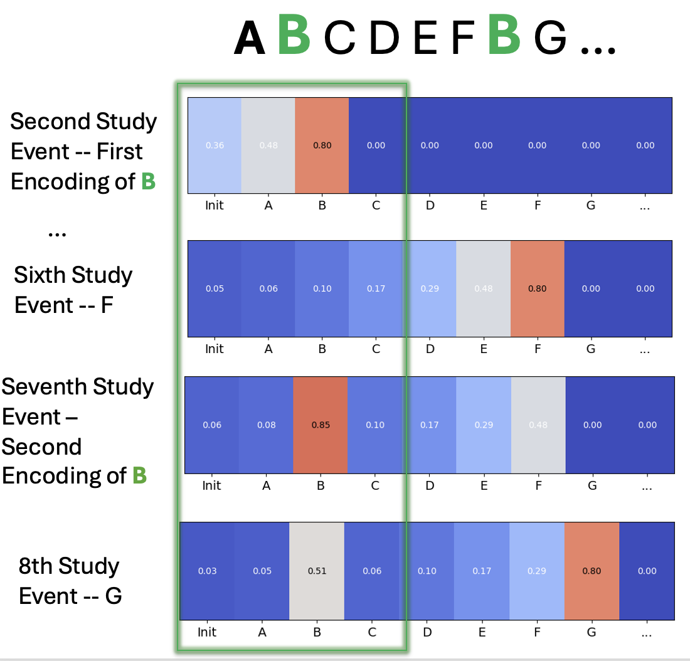
The same reinstatement rules also blend support across occurrences. At study, reinstating the first occurrence before encoding the second makes the stored contexts more similar than drift alone would produce. In a composite store they sum into shared weights; in a trace store they accumulate as multiple traces that will later be aggregated. At retrieval, cueing with the repeated item contacts associations formed at all its occurrences, so reinstatement proceeds through a mixture of occurrence-specific contexts rather than a single one. Blending at either stage implies that cues to one occurrence will tend to cue the other.
I evaluate competing model variants by holding the temporal-context dynamics from Instance-CMR (Chapter 1) fixed and manipulating three levers in the instance architecture: (1) whether study events reinstate unique versus item-specific contextual features when an item repeats, (2) whether occurrence traces compete for reinstatement at test versus a composite over occurrence contexts is reinstated, and (3) whether repetition reinforces the first-occurrence trace without knitting contexts together.
To allow study events to reinstate unique contextual features whether or not the current item is a repetition, each experimental trace concatenates item features, position features, and context features. Position features are always orthogonal across experimental traces and take over the storage key that item features played in base Instance-CMR. By contrast, item features are used only at test to identify which item has been retrieved. In variants that reinstate a composite of contexts across occurrences at retrieval, the cue uses the retrieved item pattern to select the applicable traces.
To approximate occurrence-specific reinstatement without observing which single trace “won,” I let only the traces linked to the retrieved item become eligible for reinstatement and weight them by their similarity to the current cueing context. To avoid new degrees of freedom, I reuse the same trace-sensitivity sharpening that already governs trace weighting during retrieval competition in Chapter 1, so selection pressure at reinstatement is yoked to the model’s trace discrimination. To implement reinstatement, I then reinstate a similarity-weighted blend of the eligible traces, which converges toward one trace as sharpening increases and toward an average as it decreases. To the extent that similarity tracks which occurrence the cue most strongly contacts, this procedure approximates single-trace reinstatement while preserving parsimony.
To capture boosted access to first-presentation neighborhoods without re-linking contexts at study, I treat the second presentation as an opportunity to strengthen the first-occurrence trace rather than as a cue to reinstate its context. To implement this minimally, I increase the stored strength of the first-occurrence trace at the moment of the second presentation by a single scalar factor, leaving its context unchanged and keeping the two occurrence contexts distinct. To keep the manipulation symmetric, I apply the same strengthening in both the item→context and context→item stores, so the first occurrence exerts greater pull both when reinstating context and when being contacted by context at test. To preserve parsimony, I bound the reinforcement between “no extra strengthening” and “match the original trace’s strength,” using one factor across datasets unless noted. This variant introduces one additional parameter, complicating comparison with other variants.
At baseline, Instance-CMR is functionally equivalent to standard CMR (as established in Chapter 1). CMR-NoSPR removes study-phase reinstatement while preserving drift and test-phase reinstatement. ICMR-OS further allows occurrence traces to compete for reinstatement. Finally, ICMR-Reinf adds to ICMR-OS a reinforcement of the first occurrence without knitting contexts together. Beyond these levers, all other mechanisms—context drift and normalization, initiation and stopping, Luce-style choice, and primacy scaling during study—are unchanged relative to the CMR-equated Instance-CMR from Chapter 1.
3.2 Methodological Framework
3.2.1 Defining Repetition Effects
What exactly counts as a repetition effect? It is tempting to say that any change in recall that follows multiple presentations of an item qualifies. Yet that definition confounds two influences: (i) the ordinary consequences of exposing participants to additional study material and (ii) the special consequences of encountering the same material twice. We reserve the term repetition effect for the second influence alone. Formally, it is the difference in recall performance that arises when a study event is a re-presentation of an earlier item rather than a novel item presented in the same serial positions. This definition invokes a counterfactual baseline: What would performance look like if the memory system processed the repetition in exactly the same way it would have processed a novel token, differing only in the arbitrary fact that the stimulus label is repeated? The difference between that baseline and observed performance constitutes the repetition effect proper.
The baseline cannot be observed directly, so it must be estimated. A common but flawed shortcut treats singletons in the same mixed lists as the baseline for repeaters. That comparison is problematic because item repetitions in mixed lists impact memory for all items in the list, not just the repeated item itself. They change rehearsal allocation, output competition, and contextual drift, disrupting characterization of performance in the absence of repetition (see Tulving and Hastie 1972; Ratcliff, Clark, and Shiffrin 1990). This conflation can mimic repetition effects or mask genuine repetition benefits.
Following Lohnas and Kahana (2014), we instead estimate this baseline using position-matched control lists that mirror each mixed list in length and temporal structure. For every mixed-list trial, we pair many control-list trials performed by the same participant that share the number of items, presentation schedule, instructions, and other relevant factors. In each control list, we designate the items occupying the repeater’s two positions \(i\) and \(j\) as a pseudo-repeater pair. We then recompute the target statistic after relabeling those two positions as a single pseudo-item. Repeating this resampling many times yields a null distribution under the no-special-status hypothesis – the memory system treats the two positions as independent study events that differ only in label.
Building on this foundation, we clarify how recalls from the matched positions are scored. Just as the two occurrences of “canoe” in a mixed list are analyzed as a single item, so too must the two matched positions in each control list be treated as a single pseudo-repeater. Any analysis that ignores this identity relation in control lists mischaracterizes the null. We therefore adopt a symmetric scoring rule: a recall from either matched position counts as a recall of the pseudo-repeater. A second recall of either position is treated as a repeated recall of the same item and is normally excluded from transition tallies. Alternative conventions – e.g., scoring only one position, tallying the two positions independently, or requiring both positions to count – lower the baseline and can inflate apparent repetition effects. Such analytic choices, rather than psychological mechanisms, may explain discrepancies between our results and some prior reports. We highlight some possible discrepancies in our re-analyses of published datasets.
Our procedure therefore combines (i) between-trial comparison to isolate repetition effects from list-composition effects, (ii) serial-position matching to preserve temporal structure, and (iii) explicitly symmetric scoring to preserve logical identity. Comparing mixed lists to this matched, symmetric baseline isolates the estimand – the counterfactual advantage or cost of being a repetition rather than a novel token in the same positions. Applied below, the approach markedly attenuates or eliminates patterns previously labeled as repetition effects and yields a cleaner test bed for evaluating retrieved-context models.
3.2.2 Datasets
We draw on multiple archival datasets that together span free recall and serial recall with within-list repetitions. Data from Lohnas and Kahana (2014) serves as the primary free recall test bed because it includes both mixed and control lists under identical procedures, which enables our matched-baseline estimation. Data from Broitman and Kahana (2024) adds converging free recall evidence from mixed lists only, allowing model generalization checks without baseline construction. Data from Logan (2021) Experiment 2 provides tightly controlled serial recall with single repeats at short lags, ideal for testing cross-occurrence transitions. Data from Kahana and Jacobs (2000) contributes a classic serial recall dataset with a wider lag range and learning-to-criterion procedures, from which we analyze the first forward recall only. Analyses are primarily introduced using data from Lohnas and Kahana (2014) for free recall tasks and the Logan (2021) dataset for serial recall tasks, with supplementary evidence from other datasets included in appendices.
3.2.2.1 Lohnas and Kahana (2014)
This dataset is the focal source for our free recall analyses because it offers matched control lists and systematic manipulation of repetition spacing. Across 4 sessions, 35 subjects performed delayed free recall of 48 lists. Subjects encountered four different types of lists:
- Control lists that contained all once-presented items;
- pure massed lists containing all twice-presented items;
- pure spaced lists consisting of items presented twice at lags 1-8, where lag is defined as the number of intervening items between a repeated item’s presentations;
- mixed lists consisting of once presented, massed and spaced items.
Within each session, subjects encountered three lists of each of these four types.
In each list there were 40 presentation positions, such that in the control lists each position was occupied by a singleton item, and in the pure massed and pure spaced lists, 20 unique repeater words occupied the 40 positions. In the mixed lists 28 singletons and six repeater words occupied the 40 positions. In the pure spaced lists, spacings of repeated items were chosen so that each of the lags 1-8 occurred with equal probability. In the mixed lists, massed repetitions (lag=0) and spaced repetitions (lags 1-8) were chosen such that each of the 9 lags of 0-8 were used exactly twice within each session. The order of presentation for the different list types was randomized within each session.
3.2.2.2 Broitman and Kahana (2024)
We include this dataset to test model predictions in a free recall setting that omits control lists, providing a complementary generalization check under high trial counts. Across 6 sessions, 52 participants performed delayed free recall with mixed lists. Each list contained 12 unique words, half presented once and half presented twice, yielding 18 total presentations per list. Repeat items were separated by at least three intervening presentations. The first presentation of a repeated item always occurred within the first 12 serial positions, and the second always occurred after position 6. Single items were distributed across all serial positions. Words were selected to minimize adjacent semantic similarity using Word Association Spaces, reducing confounds between temporal and semantic associations. In each session, participants completed 21 lists under a consistent study-then-recall procedure with a fixed post-encoding delay before recall. Control lists were not included in this experimental design, so we use this dataset for qualitative benchmarks and model comparisons that do not require matched-baseline estimation.
3.2.2.3 Logan (2021) Experiment 2
We use this experiment to evaluate repetition effects in serial recall under tightly controlled list structure and short lags. Twenty-four participants completed lists designed to test repetition effects in serial recall. Participants were recruited for self-reported typing speed of at least 40 WPM, with a mean of 76.74 WPM (SD 21.03) and mean accuracy of 93.66% (SD 2.77). All lists were six letters long and letters were sampled uniformly from the 26-letter English alphabet. There were 576 lists in total divided evenly across multiple task variants, and our analyses focus on the serial-recall subset. Within each task, 96 lists contained no repetitions and 96 lists contained a single repeated letter. For repeated lists, the lag between the two occurrences was 0, 1, 2, or 3 with 24 lists at each lag. Repeated items appeared in all possible positions with equal frequency for lags 1–3, and for lag 0 four positions were tested five times while one position was tested four times. Lists with and without repetitions were randomly interleaved. On each trial, the six-letter array was displayed simultaneously for 1000 ms, then removed, and participants typed the letters in order. A 1000-ms blank screen followed each response before the next trial.
3.2.2.4 Kahana and Jacobs (2000)
We analyze this dataset to probe serial recall with a wider lag range and ensure generalization of our serial recall results across datasets. Twenty participants completed 12 sessions of serial recall. Each session comprised 36 lists built from randomly arranged consonants excluding “Y”. Lists crossed three lengths (11, 12, 13) with two repetition conditions (no repeats vs one repeated consonant), six lists per cell. In repetition lists a single consonant was repeated with lag 0–5, and the first occurrence was never in the first two or last two positions. On each study–test cycle, consonants were shown one at a time for 1000 ms with a 250-ms interstimulus interval, followed by typed forward recall without backspace. Lists were re-presented and tested until participants achieved three consecutive perfect forward recalls, after which a single backward recall was administered. For the present analyses we use only the first forward recall immediately following the initial study presentation for each unique list. Backward recall trials and subsequent forward recalls used to reach criterion are excluded. We also do not analyze inter-response times. Assignment of consonants to list structures and the order of list conditions were separately randomized for each participant and session.
3.2.3 Model Evaluation
We evaluate models using two complementary approaches: likelihood-based fitting and generative performance assessment. Given an arbitrary parameter configuration and sequences of responses to predict, a model simulates encoding of each item presented in the corresponding study list in its respective order. Then, beginning with the first item the participant recalled in the trial, the probability assigned by the model to the recall event is recorded. Next, the model simulates retrieval of that item, and given its updated state is used to similarly predict the next event in the recall sequence - either retrieval of another item, or termination of recall - and so on until retrieval terminates. The probability that the model assigns to each event in the recall sequence conditional on previous trial events are thus all recorded. These recorded probabilities are then log-transformed and summed to obtain the log-likelihood of the entire sequence. Across an entire dataset containing multiple trials, sequence log-likelihoods can be summed to obtain a log-likelihood of the entire dataset given the model and its parameters. Lower negative log-likelihoods assigned to datasets by a model correspond to better effectiveness accounting for those datasets.
While quantitative model comparison helps measure relative evidence in favor of one model over another, tests of the ability of candidate models to produce specific effects from data can provide more direct evidence for or against a model’s account of memory (Palminteri, Wyart, and Koechlin 2017). Failure to reproduce an effect that is well-established in the literature can effectively falsify a model, requiring new or modified models to account for the data. To evaluate the generative performance of the CMR model and its variants, we will first fit model variants to applicable data using the likelihood-based evaluation and fitting techniques reviewed above. Next, we will simulate data from the model using the fitted parameters and apply proposed analyses to the simulated data to measure the model’s ability to predict the outcomes of these analyses. The match between the model’s predictions and the observed data quantifies the model’s generative performance.
3.2.4 Diagnostic Tests of Associative Interference
All analyses use the matched, symmetric baseline defined above. For each mixed-list trial with a repeater at positions \(i\) and \(j\), we pair many control-list trials that match list length and presentation schedule; in each control list we designate \(i\) and \(j\) as a single pseudo-repeater and apply symmetric scoring. Unless noted, conditional probabilities are computed over eligible transitions (targets exist and have not yet been recalled), aggregated within participant, and then averaged across participants. Mixed–minus–baseline contrasts isolate the contribution of repetition structure.
3.2.4.1 Repetition lag-CRP (outgoing)

The goal is to test whether retrieving a repeater reinstates a composite of its occurrence-specific contexts (blending) or selectively routes through one occurrence (occurrence-specific access). For every recall of a repeater with study positions \(i\) and \(j\) (\(i<j\)), we construct two centered lag-CRPs: one treating \(i\) as the center and one treating \(j\) as the center. From the first-centered cue, a \(+1\) transition is to position \(i{+}1\); from the second-centered cue, a \(+1\) transition is to position \(j{+}1\). Each centered curve gives the probability of the very next recall at each available lag, conditional on eligibility.
Interpretation proceeds by comparing mixed lists to the position-matched baseline. Blending predicts that, relative to baseline, outgoing transitions will be more balanced across the two centers (reduced separation of first- vs second-centered curves) because both occurrence contexts contribute to the cue. Occurrence-specific reinstatement predicts a preserved or enlarged separation, typically favoring the first occurrence (e.g., higher \(+1\) from the first center than from the second).
3.2.4.2 Repetition lag-CRP (incoming; “backward” variant)
This variant helps explore the extent to which any asymmetry in the outgoing analysis arises from how repeaters are cued versus how they cue what follows. For every recall of a repeater, we look one step back to the immediately preceding recall and compute lags centered on the repeater’s first and second study positions. If the asymmetry is already present on incoming transitions, list context before the repeater tends to match one occurrence’s neighborhood more than the other (a cue-driven effect). If incoming curves show little asymmetry but outgoing curves do, the asymmetry is more likely due to how the repeater reinstates context.
3.2.4.3 Cross-occurrence neighbor contiguity (free recall)
Lohnas and Kahana (2014) introduced a neighbor-contiguity test for cross-occurrence blending: if the first-presentation context is reinstated at the second, neighborhoods around the two presentations become associatively linked. They measured the probability of transitions from a \(+1\) or \(+2\) neighbor of one presentation to a \(+1\) or \(+2\) neighbor of the other, comparing mixed lists to position-matched controls.
I keep that intuition but refine both baseline and readout. First, the matched baseline uses symmetric scoring over the two matched positions, preserving their identity relation and avoiding inflation that arises when matched positions are tallied independently. Second, I recast neighbor-contiguity as a centered lag-CRP triggered by a neighbor of one occurrence and centered on the other occurrence. This reveals the full shape of cross-occurrence support rather than only neighbor-to-neighbor bins.
Let a repeater appear at \(i\) and \(j\) with \(i<j\). In the first-centered variant, triggers are recalls of \(j{+}1\) or \(j{+}2\); for each trigger we record the next recall and compute its lag relative to \(i\), tabulating a lag-CRP centered on \(i\) under the usual eligibility constraints. The second-centered variant swaps roles, using \(i{+}1\) or \(i{+}2\) as triggers and centering lags on \(j\). For each variant we subtract the matched, symmetric baseline to obtain a mixed–minus–baseline curve.
Blending predicts above-baseline mass near the alternative occurrence’s neighbors (e.g., elevated probability around \(\ell=\pm1,\pm2\) with the typical forward skew), because the trigger in one neighborhood partially reinstates the other neighborhood’s context. Occurrence-specific access predicts that the centered curves in mixed lists overlay their baselines, indicating no selective elevation of cross-occurrence neighbors.
Re-expressing neighbor-contiguity this way provides a position-controlled contrast (via symmetric scoring) and a richer diagnostic: the magnitude and spread of the centered curve show whether cross-occurrence support is diffuse, localized, or absent. Because the triggers are neighbors rather than the repeater itself, the analysis remains sensitive to blending that operates without requiring the repeated item to be recalled.
3.2.4.4 Serial forward-chaining test (serial recall)
This test asks whether blended support at retrieval increases competition between continuations from the first versus second occurrence in serial report. For repeated lists we focus on trials where participants have reported the list correctly through position \(i\) (the first occurrence). The correct continuation is the transition \(i\rightarrow i{+}1\); the cross-occurrence competitor is \(i\rightarrow j{+}1\). We compute the probabilities of the correct chain and the cross-occurrence error, conditional on eligibility, and compare to matched pseudo-repeater positions in controls. Blending predicts an elevated error rate to \(j{+}1\) relative to baseline with a corresponding reduction in correct forward chaining. Occurrence-specific reinstatement predicts no elevation of \(i\rightarrow j{+}1\) errors relative to baseline and intact chaining through \(i{+}1\).
3.3 Reassessing Empirical Benchmarks Against CMR
Before turning to repetition-specific diagnostics, I verify that mixed and control lists are comparable once the matched, symmetric baseline is applied, and that standard CMR reproduces the benchmarks that any viable free-recall account must capture. Error bars for any figure reflect a bootstrapped 95% confidence interval over subject means, enabling statistical inference on the group level. Figure 3.3 shows serial-position curves (SPCs), lag-conditional response probabilities (lag-CRPs), and probabilities of first recall (PFRs) for mixed and control lists in Lohnas and Kahana (2014), plotted in raw form (left) and after baseline correction (right). In the raw SPCs, mixed lists appear to enjoy a mid-list advantage; after position matching and symmetric scoring this inflation vanishes, and SPCs from mixed and control lists are essentially indistinguishable. Small raw differences in the lag-CRP likewise disappear under the baseline, and the PFRs are virtually identical across conditions. With the basic benchmarks satisfied and no substantive differences between mixed and control lists once the baseline is applied, we can focus on analyses that more directly test the predictions of item-based context evolution.
Standard CMR broadly reproduces these benchmarks under the same scoring and similarly predicts limited differences between SPC, PFR, and lag-CRP outcomes across mixed and control lists(Figure 3.4). We therefore focus our evaluation on the specific predictions that arise from the model’s treatment of repeated items.
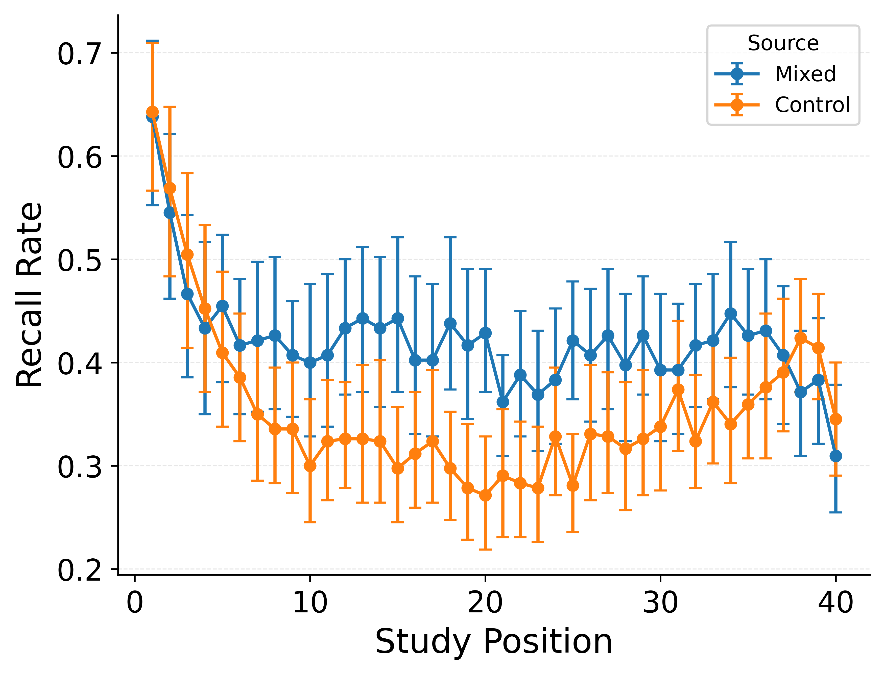


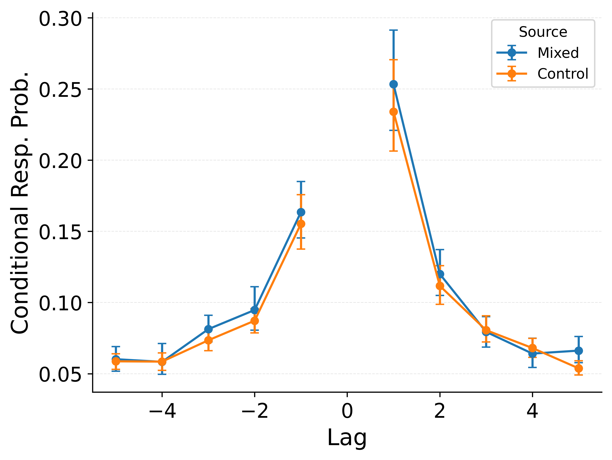
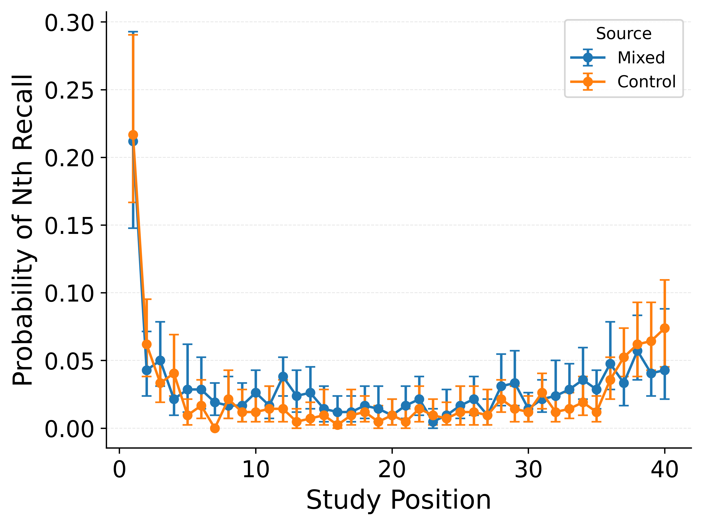
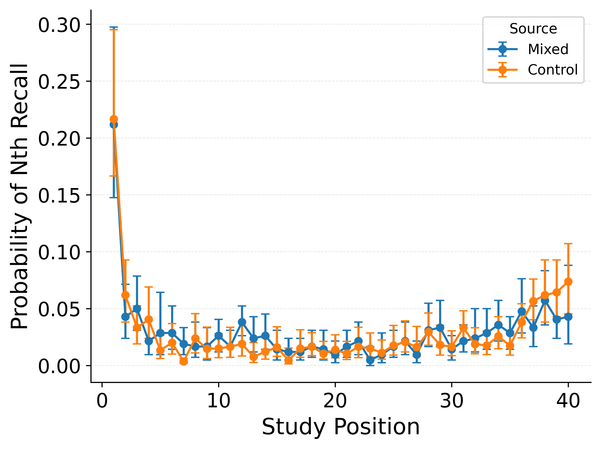
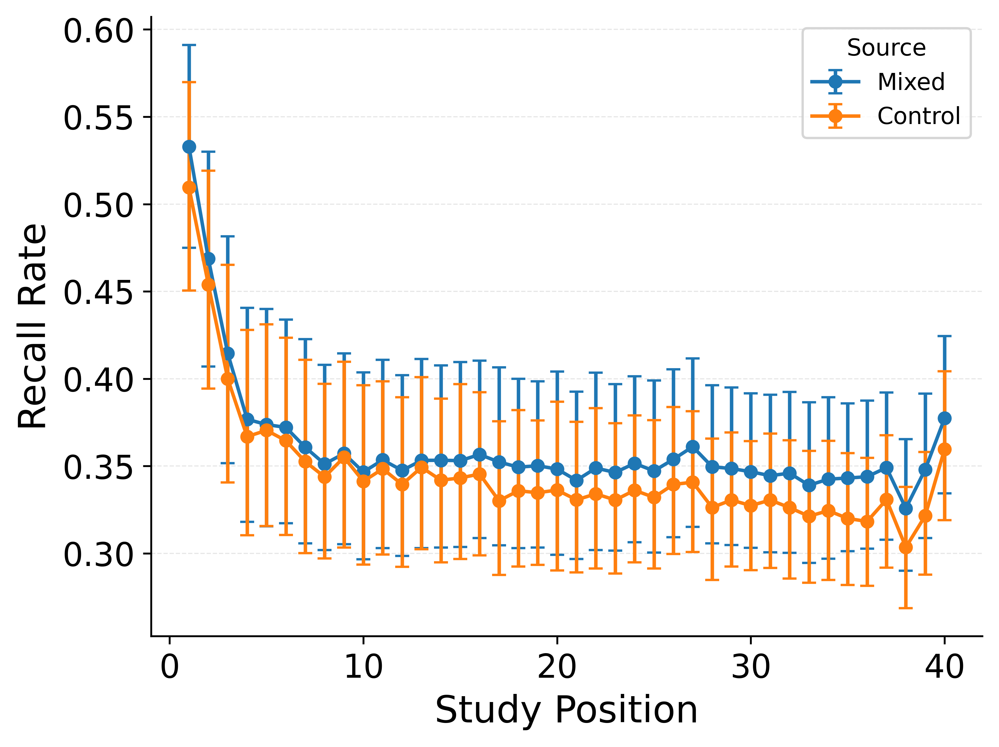
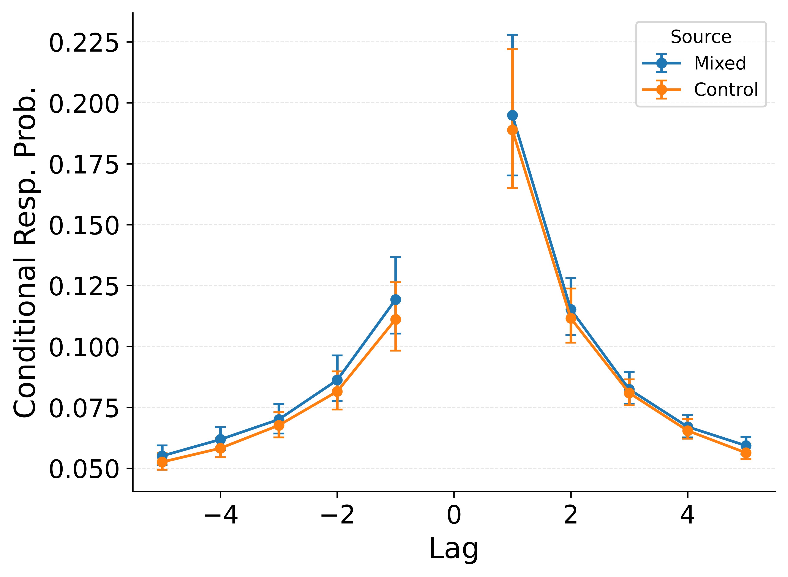

3.3.1 The Spacing Effect
The spacing effect is classically understood as a repetition effect, and has been a central focus of research on memory for repeated experience (Cepeda et al. 2006) However, it applies even to pairs of distinct items, not just repeated items. By measuring the probability of retrieving either of two study items during a free recall trial – an analysis termed the “OR score” – research often finds that pairs of spaced items were more likely to be recalled than pairs of massed items (Lohnas, Polyn, and Kahana 2011). Notably, in a phenomenon called “superadditivity”, the mnemonic benefit of spacing is argued to be more pronounced for repeated items than for distinct items. The probability of recalling an item repeated in a spaced fashion may be higher than the probability of recalling one of two distinct but similarly spaced items, violating statistical independence (Benjamin and Tullis 2010). Study-phase retrieval or other mechanisms specific to item repetitions are thought to complement contextual variability mechanisms to produce such superadditivity.
Figure 3.5 displays the spacing function for mixed and control lists in Lohnas and Kahana (2014) alongside fitted CMR simulations. In the data, the spacing function estimated from mixed lists appears steeper than the function derived from our position-matched, symmetric baseline (left panel of Figure 3.5). Because the baseline equates list length, presentation schedule, and scoring opportunity, the slope difference cannot be attributed to serial-position or scoring artifacts; it suggests a repetition-specific boost over and above the spacing effect observed for equally spaced distinct items (i.e., a superadditive component). Standard CMR, by contrast, reproduces the overall monotonic spacing advantage but shows no apparent corresponding slope separation between mixed and baseline conditions (right panel of Figure 3.5). Thus, while CMR captures the basic memorability gain with increasing lag, it does not express the additional repetition-specific steepening present in the data.
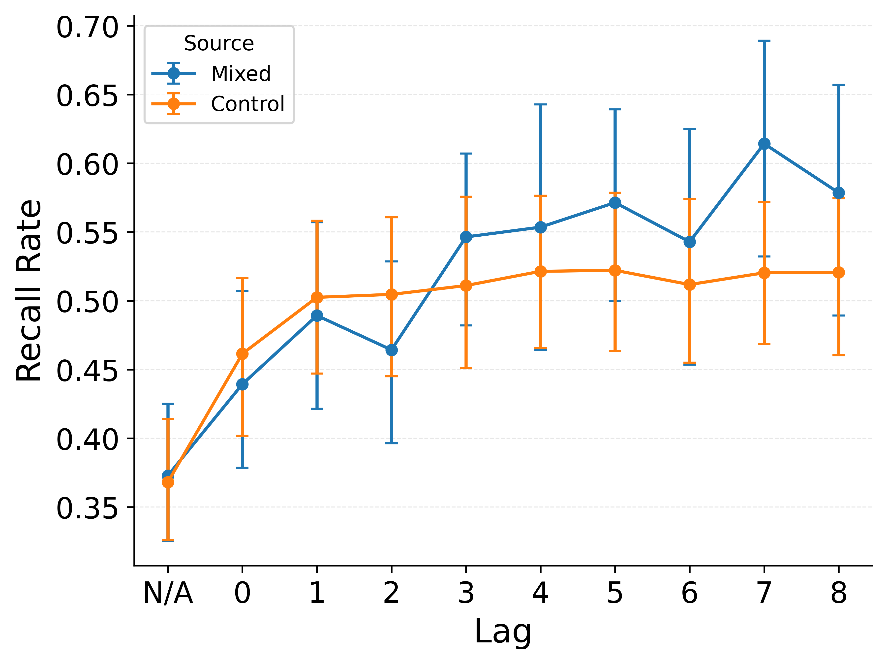

3.3.2 Cross-Occurrence Neighbor Transitions
This analysis tests whether repetition links the neighborhoods surrounding the two study positions of a repeated item. We use the centered lag-CRP recast described above, with triggers confined to forward neighbors (+1 or +2) of one occurrence and lags centered on the other occurrence, and we compare mixed lists to the matched, symmetric baseline.
We examine two symmetric variants, shown in the top row of Figure 3.6. In the first→second variant (left column), transitions are triggered by recalls of the forward neighbors of the first presentation (positions \(i{+}1\) or \(i{+}2\)), and the lag-CRP is centered on the second presentation at \(j\) (so \(\ell=\text{next}-j\)). In the second→first variant (right column), triggers are the forward neighbors of the second presentation (\(j{+}1\) or \(j{+}2\)), and the lag-CRP is centered on the first presentation at \(i\) (so \(\ell=\text{next}-i\)). As before, all probabilities condition on eligibility and the baseline uses position-matched control lists with symmetric scoring.
Because study-phase reinstatement pulls the two occurrence contexts together and retrieval reinstates a composite tied to the repeated item, CMR predicts elevated cross-occurrence neighbor transitions in both directions: after a trigger in one neighborhood, the next recall should be above baseline at the other neighborhood’s immediate lags (typically with the usual forward skew). These predictions are confirmed in the simulations (bottom row of Figure 3.6), which show clear above-baseline mass near \(\ell=\pm1,\pm2\) in both variants.
The data tell a different story. In both variants, mixed–minus–baseline curves show little to no elevation at the other occurrence’s neighbors (top row of Figure 3.6). Thus, we do not see the predicted knitting of the two neighborhoods. However, there is a selective effect not anticipated by CMR: in the first→second variant (left), transitions to the repeated item itself (lag \(=0\), conditional on availability) are elevated relative to baseline. This lag-0 bump does not appear in the second→first variant (right), nor do we observe the robust cross-neighbor boosts that CMR predicts in either direction.
The absence of above-baseline neighbor-to-neighbor transitions argues against a blended neighborhood linkage as the dominant consequence of repetition. The asymmetric lag-0 elevation—visible only when moving from the first occurrence’s neighborhood toward the second—suggests that repetition can heighten access to the repeated item without knitting the two neighborhoods together. We return to this selective lag-0 effect when introducing the ICMR-Reinf variant, which replaces associative blending at study with reinforcement of the first-occurrence trace and better accommodates this pattern.


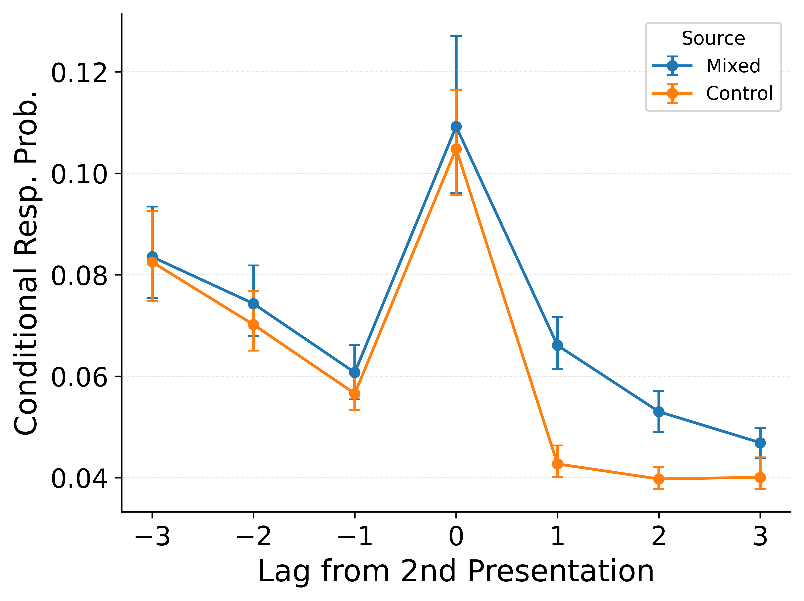

3.3.3 The Repetition Lag-CRP
The outgoing repetition lag-CRP quantifies how a recalled repeater cues subsequent recall from each occurrence’s neighborhood (Figure 3.7). In the data, transitions from the repeated item preferentially target neighbors of the item’s first study position instead of neighbors of the second. In particular, the \(+1\) bin from the first-centered cue exceeds the \(+1\) bin from the second-centered cue, and this separation is larger than in the position-matched baseline.
Our simulations of standard CMR (bottom row of Figure 3.7) demonstrate the opposite pattern, consistent with its prediction of cross-occurrence associative interference. CMR makes it difficult to cue neighbors of an item’s first occurrence without also cueing neighbors of the second occurrence. Thus for recalled items presented at study positions \(i\) and \(j\), CMR predicts relatively balanced transition rates to positions \(i{+}1\) and \(j{+}1\) relative to the baseline. This conflict isolates the problem: when the repeater is recalled, the model’s item-based reinstatement routes through a composite of contexts, whereas people’s recalls behave as if a single occurrence’s context is (selectively) reinstated.


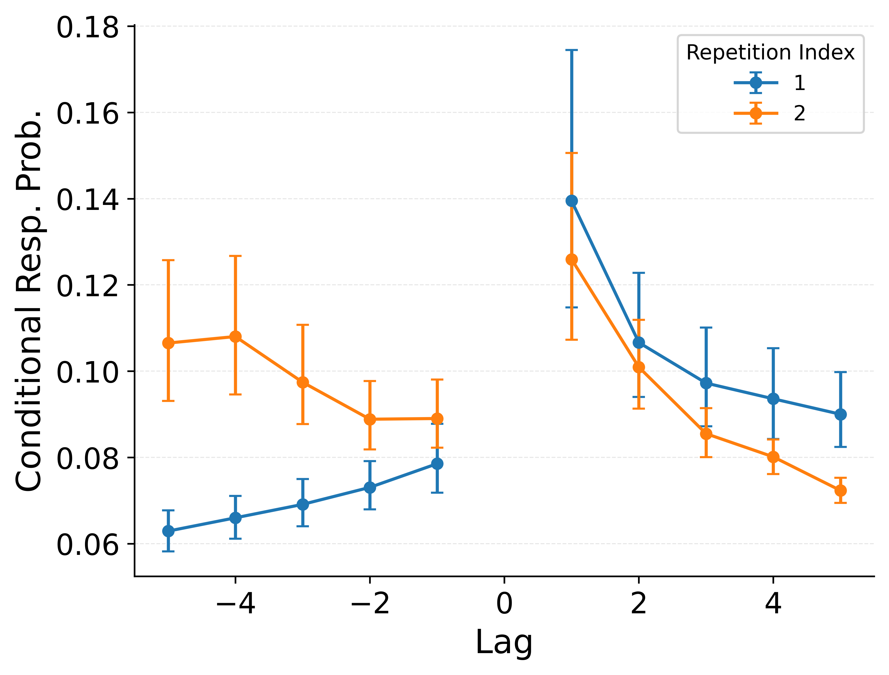

3.3.4 Backward/Incoming Variant of the Repetition Lag-CRP
For each recall of a repeater, we look one step back to the item produced immediately before it and compute two centered lag-CRPs—one centered on the first presentation and one on the second—using the matched, symmetric baseline to control position effects. In the data (Figure 3.8, top row), arrivals at repeaters come disproportionately from the backward neighbor of the first presentation (from \(i{-}1\) to \(i\)) compared with the backward neighbor of the second (from \(j{-}1\) to \(j\)). The preference is strongest in mixed lists but is also evident in the position-matched baseline, indicating that it reflects general serial-order dynamics (e.g., forward contiguity and output competition) rather than repetition-specific knitting per se. Standard CMR yields only a weak first-over-second advantage on these incoming transitions (Figure 3.8, bottom row), consistent with the model’s tendency to aggregate support across a repeater’s occurrences and thereby dilute approach biases. Practically, this pattern cautions that any first-over-second asymmetry seen after recalling a repeater (the outgoing analysis) may be partly inherited from how the search state approached the repeater; the mixed–minus–baseline contrast in the outgoing test is therefore the cleaner probe of repetition-specific reinstatement.

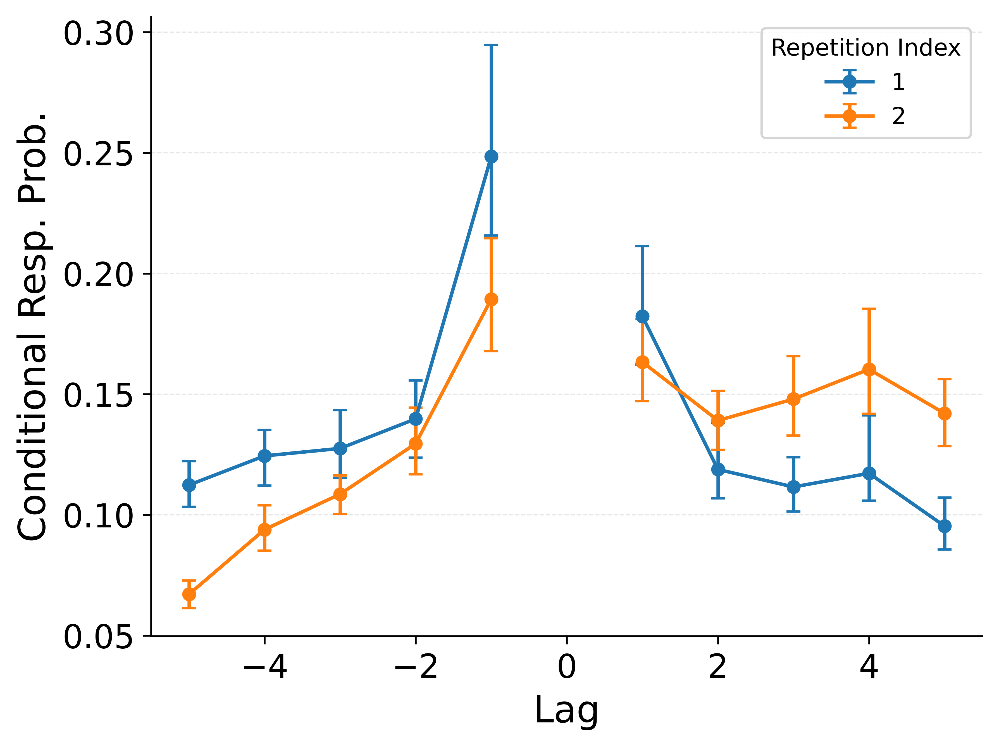
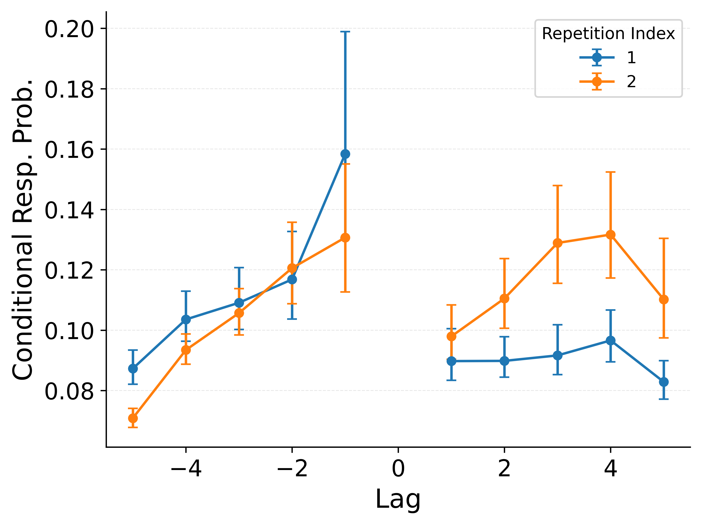
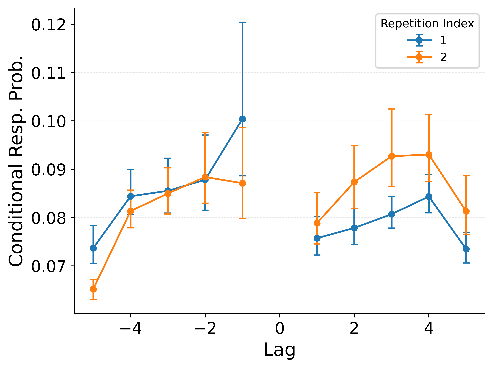
3.3.5 Forward Chaining in Serial Recall
Serial recall provides a more stringent test of cross-occurrence competition. In the data from Logan (2021) and from Kahana and Jacobs (2000) (Figure 3.9, top), after participants correctly type through the first occurrence at position \(i\), continuations to \(i{+}1\) remain strong, and erroneous continuations to the competing neighbor \(j{+}1\) are rare and indistinguishable from the matched control baseline. That is, the second occurrence’s neighborhood does not draw responses away from the correct forward chain.
In the bottom half of Figure 3.9, simulations of standard CMR after fitting to each dataset predicts a measurable elevation of \(i\!\rightarrow\!j{+}1\) errors relative to baseline, again reflecting blended support across occurrences. The absence of this cross-occurrence forward error in the data generalizes the non-interference finding from free recall to a serial-order task: whether the next step is unconstrained (free recall) or constrained (serial recall), occurrences behave as if support is routed through a single episode.

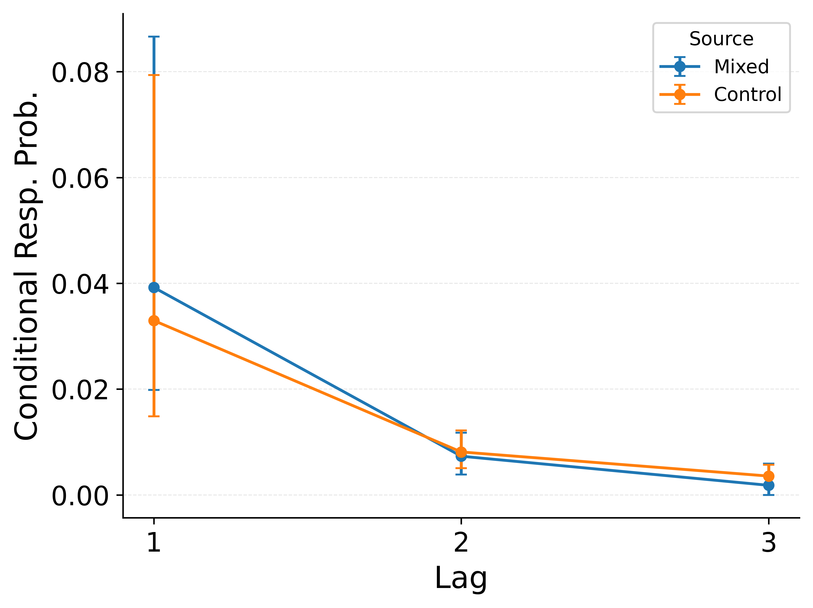


3.3.6 Summary: Noninterference Across Tasks
Across three diagnostics and two tasks, the same pattern recurs. When we remove list-composition artifacts with a matched, symmetric baseline, free recall does not show elevated cross-occurrence neighbor transitions, and the repeated item does not balance access to the two neighborhoods; instead, access is preferentially routed to the first occurrence’s neighbors. In serial recall, the first occurrence’s forward chain remains intact, with no detectable attraction to the second occurrence’s neighbors. Standard CMR fits the classic benchmarks and the spacing function, but its item-based reinstatement produces a robust associative-interference signature that the data do not support. This motivates the mechanistic analysis that follows, which alters how contextual features are reinstated at study and at test—first by removing study-phase reinstatement (CMR-NoSPR), then by allowing occurrence-specific reinstatement at retrieval (ICMR-OS), and finally by rehabilitating study-phase retrieval as reinforcement rather than blending (ICMR-Reinf) to reconcile retrieved-context theory with the observed non-interference.
3.4 CMR-NoSPR: CMR without Study Phase Retrieval
CMR-NoSPR removes study-phase reinstatement while leaving contextual drift and test-phase reinstatement intact. At repetition, it does not reactivate contextual features tied to an earlier occurrence; instead, it reinstates a fresh, non-overlapping context pattern before storing the new trace. This manipulation targets the first route to blending described above (knitting at study) while preserving the second (aggregation at retrieval). The section assesses two questions: (i) does eliminating study-phase reinstatement harm fits to standard free-recall benchmarks or the spacing function; and (ii) does it resolve the associative-interference signatures (cross-occurrence neighbor elevation; balanced access to the two neighborhoods after a repeater)?
CMR-NoSPR reproduces serial-position, lag-CRP, and first-recall profiles under the same scoring as before (Figure 3.10). As with standard CMR, it predicts minimal differences between mixed and position-matched control lists once the symmetric baseline is applied. Thus removing study-phase reinstatement does not degrade fits to core free-recall benchmarks.
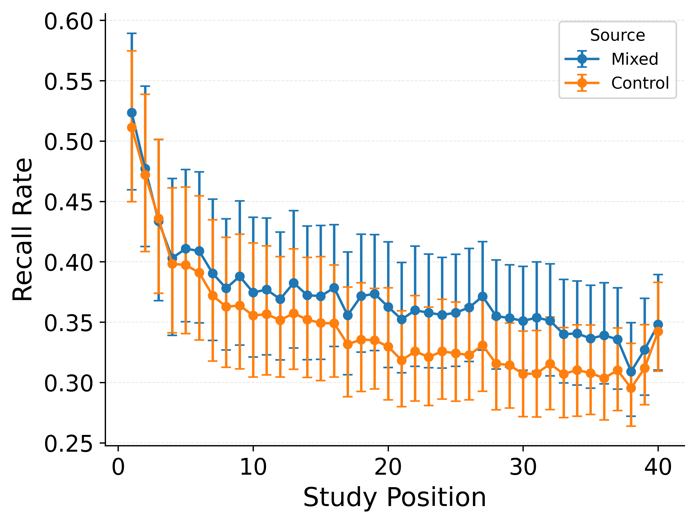

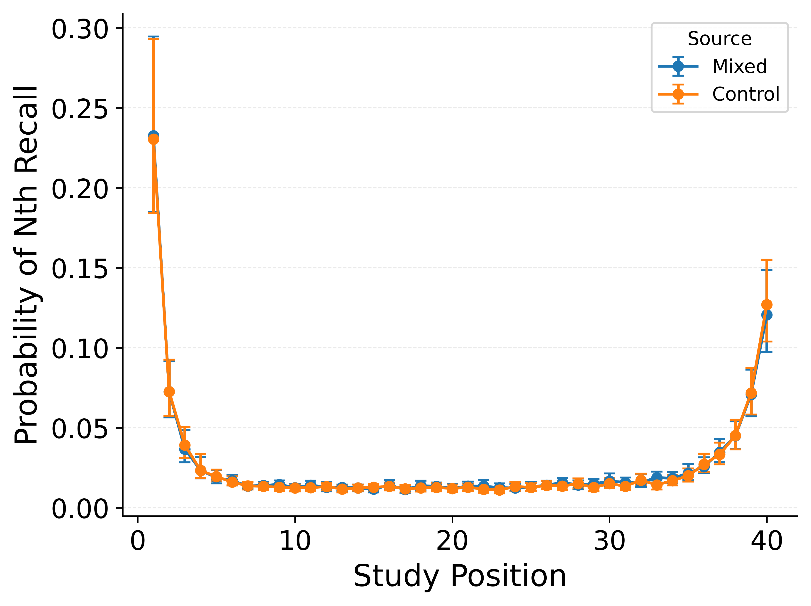
Critically, removing study-phase reinstatement does not weaken the spacing function relative to standard CMR fits (cf. Figure 3.5). This indicates that, in these list-learning paradigms, contextual variability plus test-phase reinstatement is sufficient to generate the spacing effect at least to the extent realized by the model; the particular form of study-phase reinstatement implemented in standard CMR is not required.
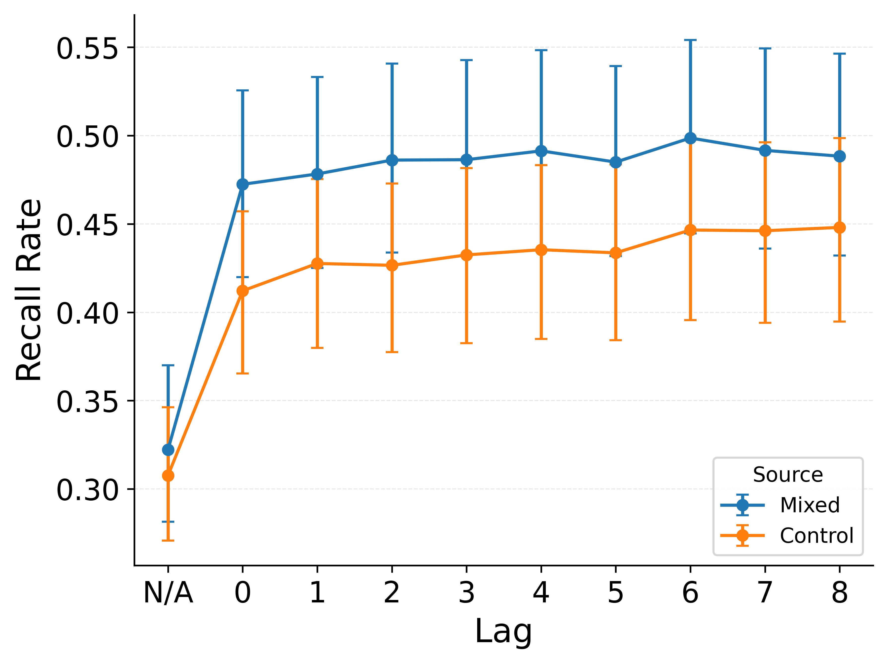
Next we turn to cross-occurrence neighbor contiguity. Here CMR-NoSPR achieves the data’s non-elevation. Because occurrences now encode to distinct contextual states, the neighborhoods around the two presentations are not knitted together at study through association to overlapping contexts. In the centered neighbor-contiguity tests (triggers from one neighborhood, lags centered on the other), mixed–minus–baseline curves sit at baseline in both directions relative to the other occurrence’s neighbors in both trigger directions, eliminating the cross-occurrence neighbor peaks predicted by standard CMR (Figure 3.12). This shows the original neighbor-contiguity elevation is a signature of study-phase knitting.
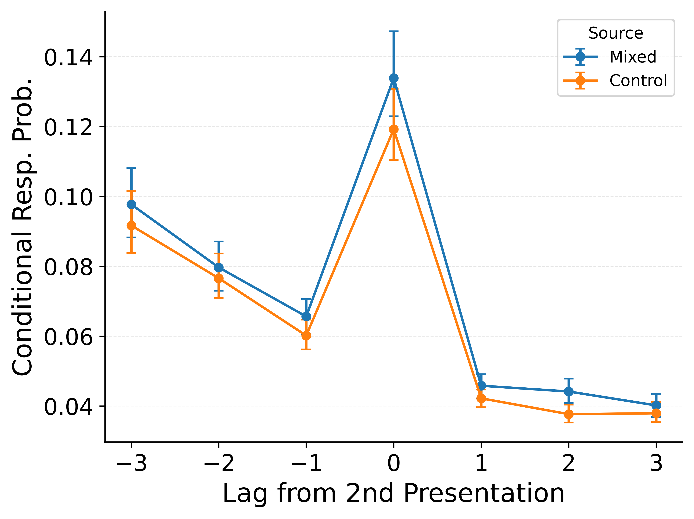
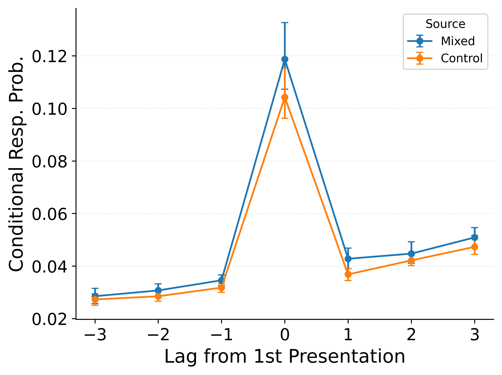
On the other hand, the outgoing repetition lag-CRP still shows the balanced-access signature of associative interference: transitions from a recalled repeater distribute more evenly to the two neighborhoods than in the matched baseline (Figure 3.13). Eliminating study-phase reinstatement therefore does not restore the first-over-second advantage seen in the data (cf. Figure 3.7); the repeater still reinstates a composite cue that contacts both occurrence contexts.

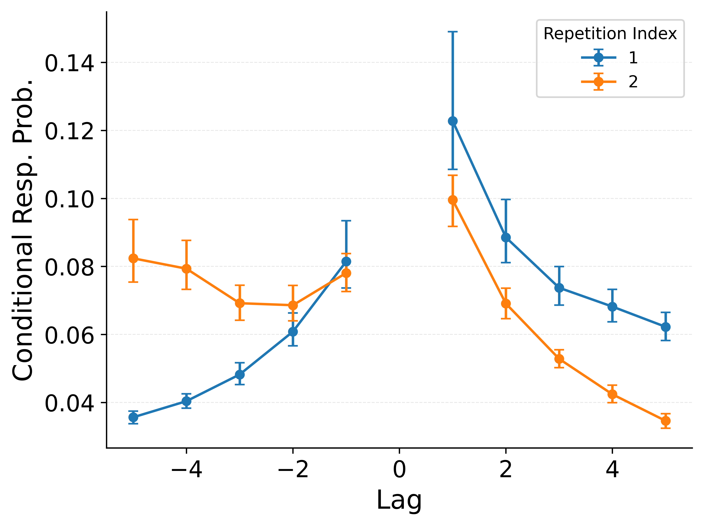
CMR-NoSPR demonstrates that study-phase reinstatement is not necessary for the spacing effect or for core free-recall benchmarks, and it eliminates the cross-occurrence neighbor knitting seen in standard CMR—aligning with the data on that diagnostic. However, it fails to resolve the interference observed when the repeater itself is the cue: the outgoing repetition lag-CRP still shows balanced access across the two neighborhoods. This isolates the remaining source of the problem to blending at retrieval, motivating the next step—an occurrence-specific reinstatement scheme (ICMR-OS) that lets traces compete so recall can route through one occurrence without contacting the other.
3.5 ICMR-OS: Allowing Competition Between Traces for Retrieval and Reinstatement
ICMR-OS goes beyond CMR-NoSPR by separating occurrences at both stages. As in CMR-NoSPR, each repetition event encodes to a non-overlapping contextual state (no knitting at study). At retrieval, however, ICMR-OS uses the instance architecture to let occurrence traces compete: when a repeated item is recalled, the model selectively reinstates the context of a single occurrence rather than a fixed composite over occurrences. Selection pressure is governed by the same trace-sensitivity parameter used in the recall competition (no new degrees of freedom). This change targets the remaining source of interference isolated in the last section—blending at test—while keeping temporal-context dynamics and other task mechanisms identical to the base model. The questions are whether this variant (i) retains benchmark free-recall behavior and the spacing function, (ii) eliminates cross-occurrence neighbor knitting (as CMR-NoSPR already did), (iii) removes the balanced-access signature in the outgoing repetition lag-CRP, and (iv) avoids cross-occurrence forward errors in serial recall.
ICMR-OS maintains good agreement with serial-position, lag-CRP, and first-recall profiles under the same matched, symmetric scoring used throughout. As with the previous models, mixed versus control differences are minimal once the baseline is applied (Figure 3.14). Thus, introducing occurrence-specific reinstatement at test does not degrade core free-recall benchmarks.

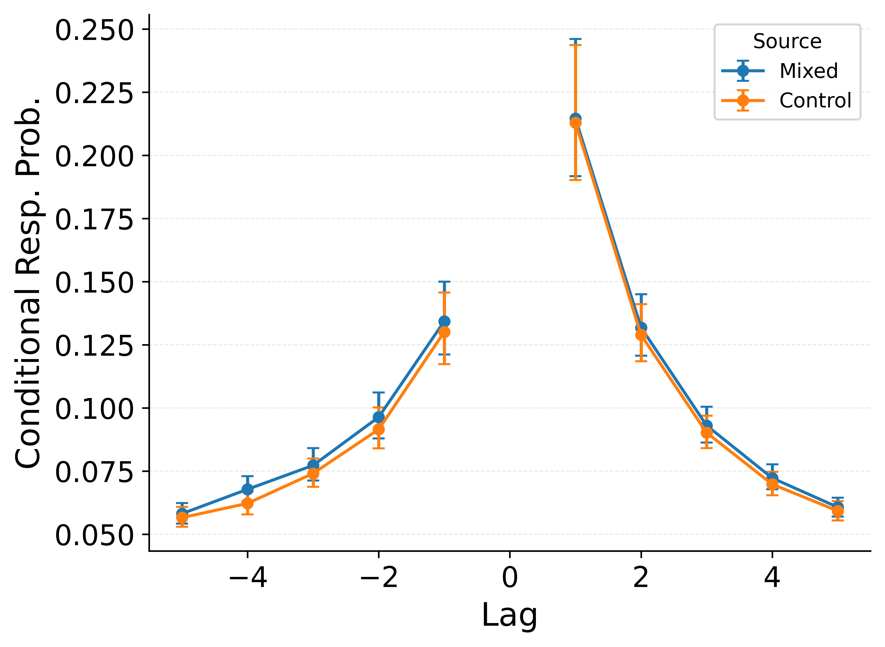
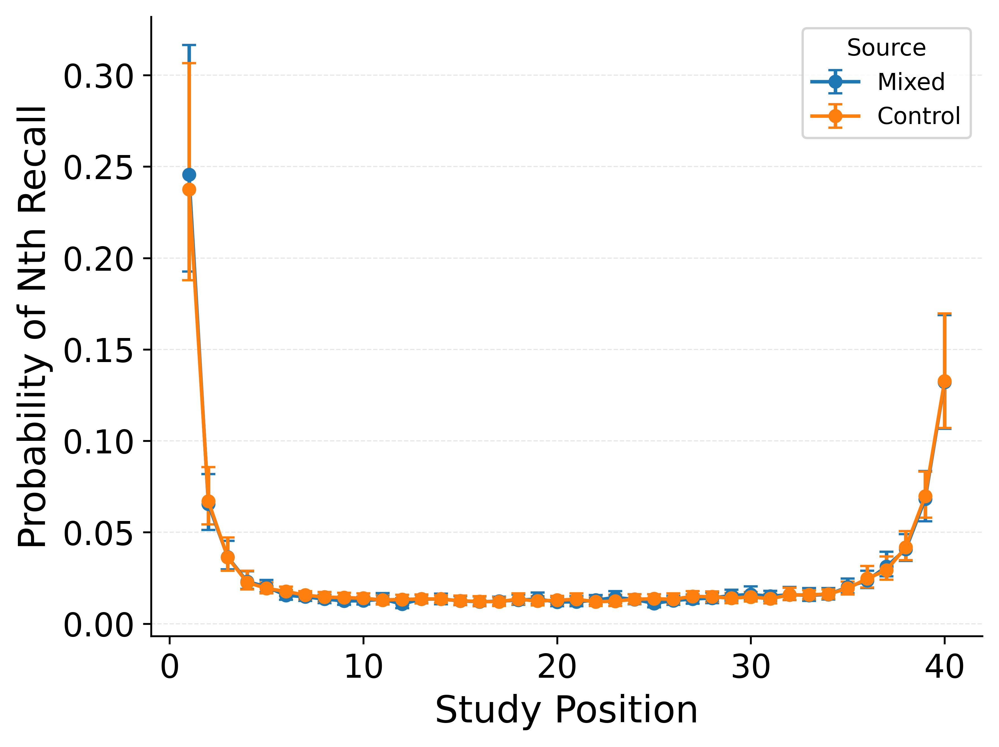
Like standard CMR and CMR-NoSPR, ICMR-OS reproduces a robust, monotonic spacing advantage (Figure 3.15). As before, removing study-phase knitting and adding occurrence-specific reinstatement does not blunt the spacing function, indicating that contextual variability plus test-phase reinstatement suffices for this benchmark in these paradigms.

Next we consider cross-occurrence neighbor contiguity. Because ICMR-OS keeps occurrence contexts distinct at study (as in CMR-NoSPR) and selective at test (no blending when the repeater is later recalled), the model predicts no elevation of cross-occurrence neighbor transitions. In the centered neighbor-contiguity tests, mixed–minus–baseline curves remain near zero in both directions (Figure Figure 3.16), matching the data’s non-elevation and improving on standard CMR’s incorrect peaks.

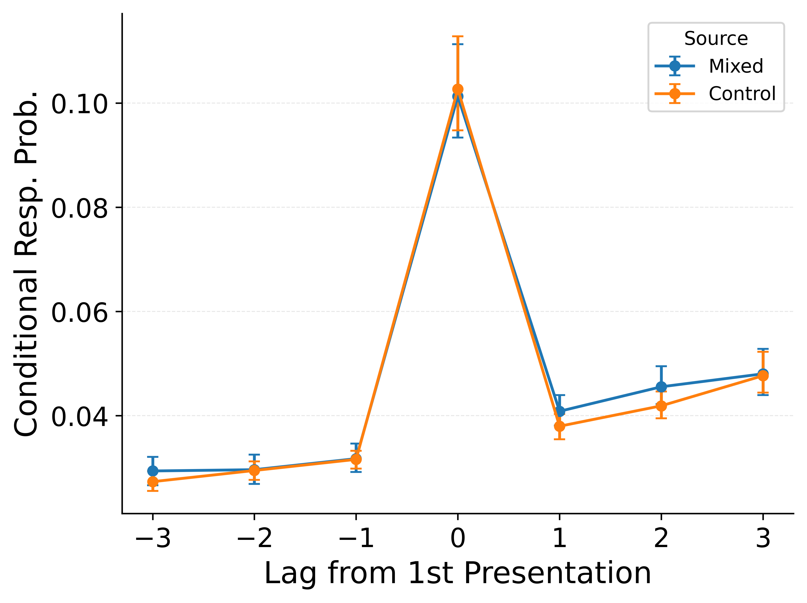
Next we consider the outgoing Repetition Lag-CRP where the critical change appears when the repeater itself is recalled. By routing reinstatement through a single occurrence, ICMR-OS removes the balanced-access signature that arises from blending in standard CMR and persists in CMR-NoSPR. Consequently, the model preserves the first-over-second preference seen in controls rather than washing it out (Figure 3.17). However, ICMR-OS does not generate the extra first-over-second separation evident in the data’s mixed-minus-baseline contrast; the model’s separation is essentially equal to baseline, not boosted. This resolves the associative-interference prediction but leaves a positive, repetition-specific asymmetry unexplained.
In the incoming/backward Repetition Lag-CRP (not displayed), selective reinstatement at test does little to the incoming variant, which reflects how the search state approached the repeater. ICMR-OS therefore predicts a modest first-over-second preference on arrivals, comparable to CMR-NoSPR and still weaker than in the data. This reinforces our earlier conclusion that the outgoing mixed–minus–baseline contrast is the cleaner probe of repetition-specific reinstatement.
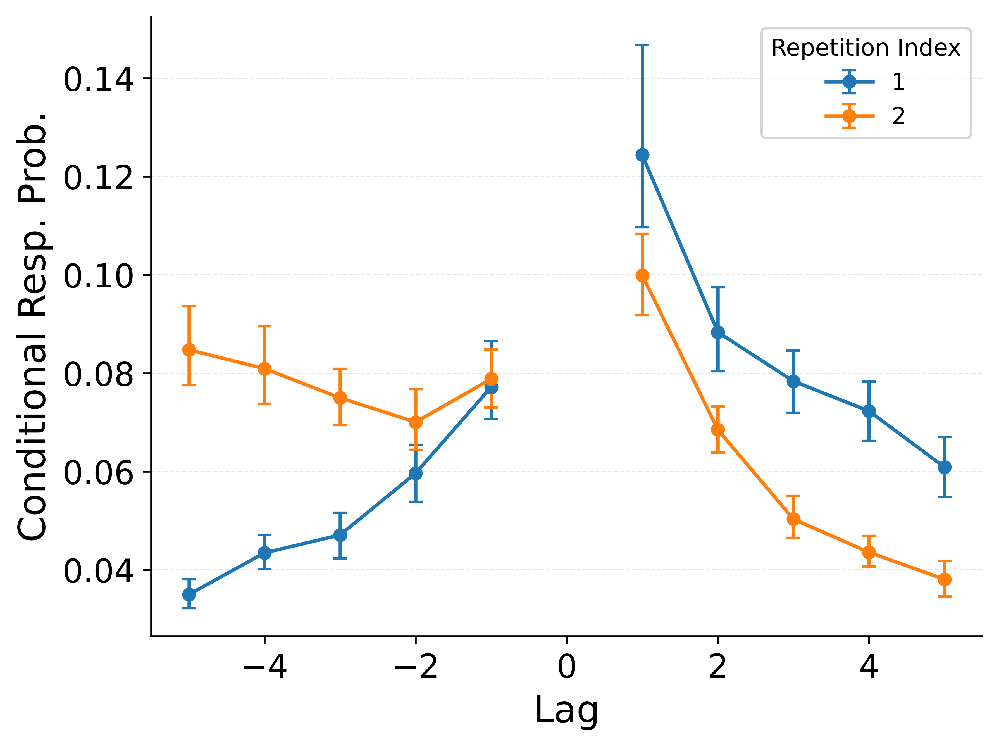
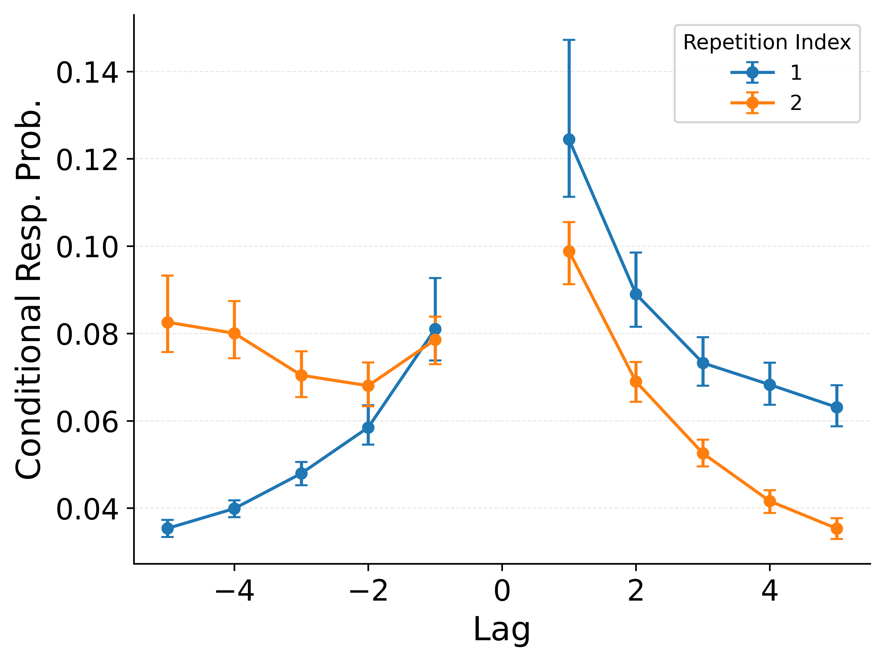
Finally, we consider the the serial recall variant of this analysis to examine forward chaining in lists with item repetitions. The occurrence-specific test-phase reinstatement directly targets cross-occurrence competition in serial report. After correct report through the first occurrence at \(i\), ICMR-OS maintains strong continuations to \(i{+}1\) and does not elevate erroneous continuations to the competitor \(j{+}1\) relative to baseline (Figure Figure 3.18, bottom row)—matching the non-interference seen in both serial datasets (cf. top row of Figure 3.9). In other words, when the task demands a specific next item, routing through a single occurrence avoids the cross-occurrence forward error predicted by blended reinstatement.
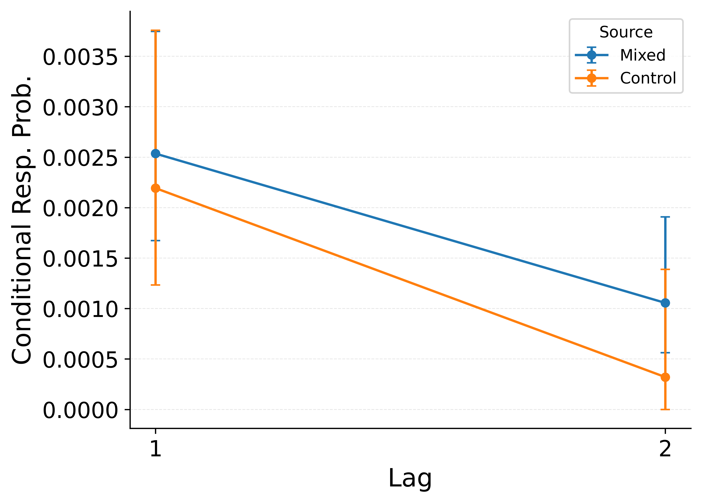
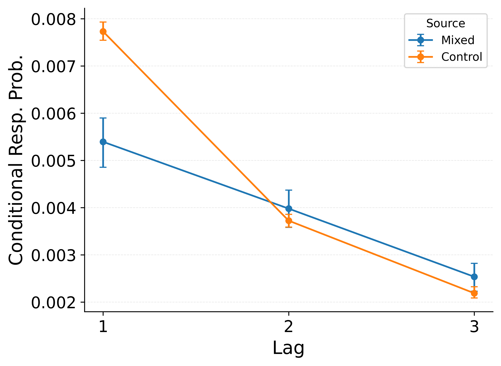
ICMR-OS reconciles retrieved-context theory with the absence of associative interference: it keeps occurrences separate at study and allows retrieval to select a single occurrence’s context at test. It preserves benchmark fits, removes cross-neighbor linkage, restores first-over-second separation in the outgoing repetition lag-CRP, and eliminates cross-occurrence forward errors in serial recall. What it does not capture are the systematic boosts for the first occurrence evident in (i) the selective lag-0 elevation in the neighbor-contiguity test (first-neighborhood triggers), (ii) the larger first-over-second asymmetry on the incoming repetition lag-CRP, and (iii) the boosted separation on the outgoing repetition lag-CRP beyond baseline (cf. Figure 3.6, Figure 3.8, Figure 3.7). These residual asymmetries motivate an additional mechanism that preferentially strengthens the first-occurrence trace without knitting contexts together—developed next in the ICMR-Reinf variant.
3.6 ICMR-Reinf: Reinforcement without Associative Blending at Study
ICMR-Reinf addresses the residual asymmetries by reconceptualizing study-phase retrieval as reinforcement rather than reinstatement. At the second presentation, the model strengthens the first-occurrence trace but does not reinstate its contextual features; the two occurrences therefore remain contextually distinct at encoding, exactly as in CMR-NoSPR and ICMR-OS. At test, ICMR-Reinf retains ICMR-OS’s occurrence-specific reinstatement: when a repeated item is recalled, a single occurrence’s context is selectively reinstated (governed by the same trace-sensitivity used in the recall competition; no new degrees of freedom there). The only added degree of freedom in this variant is a single reinforcement factor bounded between “no strengthening” and “match the original trace’s strength.” The questions are whether ICMR-Reinf (i) preserves benchmark free-recall behavior and the spacing function, (ii) maintains the elimination of cross-occurrence neighbor knitting, (iii) not only removes balanced access in the outgoing repetition lag-CRP but boosts the first-over-second separation in mixed lists beyond baseline (as in the data), and (iv) preserves the non-interference pattern in serial recall.
ICMR-Reinf maintains good agreement with serial-position, lag-CRP, and first-recall profiles under the same matched, symmetric scoring used throughout. As with prior variants, mixed–control differences are minimal once the baseline is applied (Figure 3.19). Thus, adding reinforcement at study does not degrade core free-recall benchmarks.


Like the other variants, ICMR-Reinf reproduces a robust, monotonic spacing advantage (Figure 3.20). Reinforcement does not blunt spacing; the basic lag-dependent memorability gain remains intact. (As with ICMR-OS, the model does not by itself reproduce the steeper mixed-list slope observed in the data; cf. Figure 3.5.)
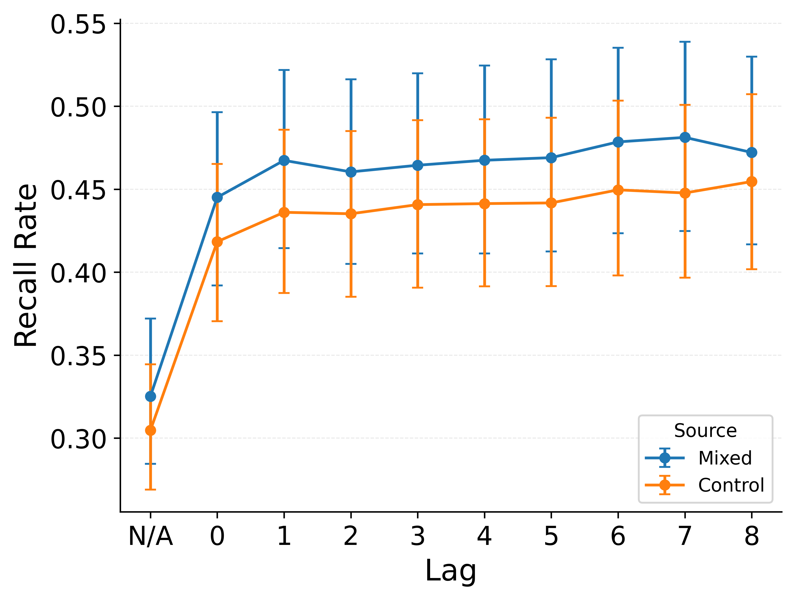
However, ICMR-Reinf potentially boosts recall rates for items studied at mid-list positions and for repeated items compared to control list items in the spacing curve, reflecting the consequences of reinforcement on the first-occurrence trace. A more refined model could – instead of boosting memory for repeated items according to a reinforcement mechanism – use a more complex balancing of trace strengths across occurrences to account for enhanced access to first-occurrence contexts during retrieval.
Turning to cross-occurrence neighbor contiguity, ICMR-Reinf inherits two ingredients that prevent knitting across neighborhoods: distinctive contexts at encoding and occurrence-specific reinstatement at test. As a result, the centered neighbor-contiguity analyses remain flat at the other occurrence’s neighbors (no above-baseline peaks), matching the data and improving on standard CMR’s incorrect elevations. At the same time, reinforcement selectively boosts lag = 0 in the first→second variant (triggering from neighbors of the first presentation), reflecting easier access to the repeated item itself—an asymmetric feature visible in the data (cf. Figure 3.6).
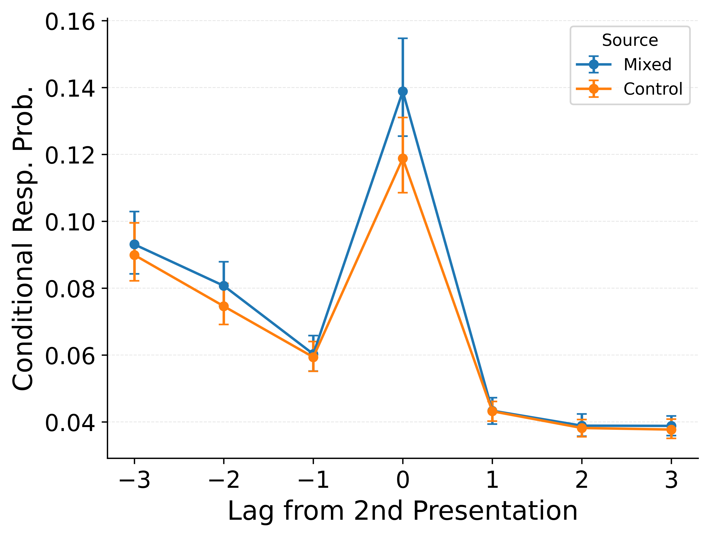

The decisive change also appears in the outgoing repetition lag-CRP. By routing reinstatement through a single occurrence and preferentially strengthening the first-occurrence trace, ICMR-Reinf not only avoids balanced access but also amplifies the first-over-second separation in mixed lists relative to the matched baseline—capturing the positive, repetition-specific asymmetry in the data. The 2×2 comparison in Figure 3.22 shows that where ICMR-OS preserved only baseline-level separation, ICMR-Reinf produces the boosted separation observed empirically.
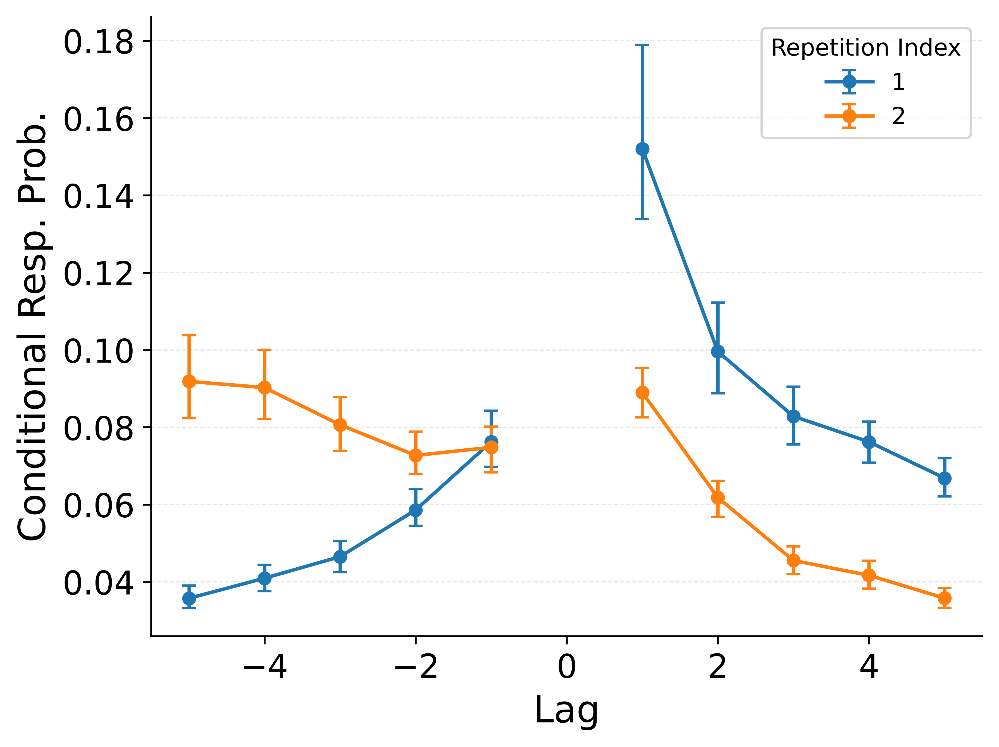
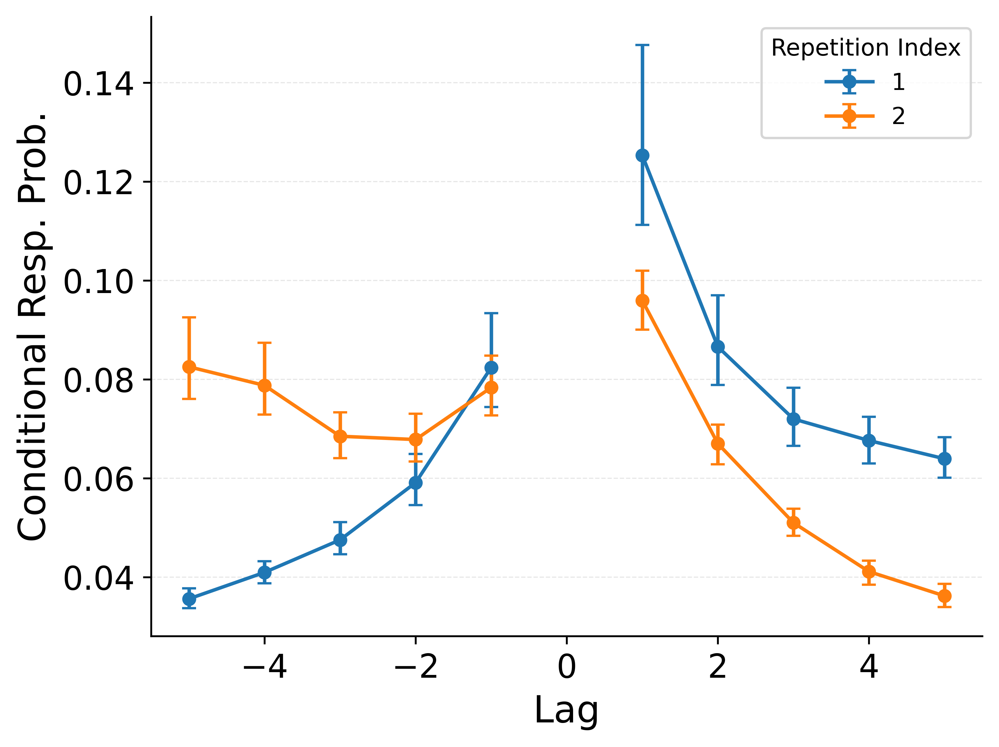
For the incoming/backward repetition lag-CRP (Figure 3.23), reinforcement increases arrivals from the first occurrence’s backward neighbor relative to the second, strengthening the first-over-second preference beyond ICMR-OS and moving the model toward the empirical pattern. Because this variant largely reflects how the search state approached the repeater, the outgoing mixed–minus–baseline contrast remains the cleanest probe of repetition-specific reinstatement, and that is where ICMR-Reinf shows its clearest advantage.
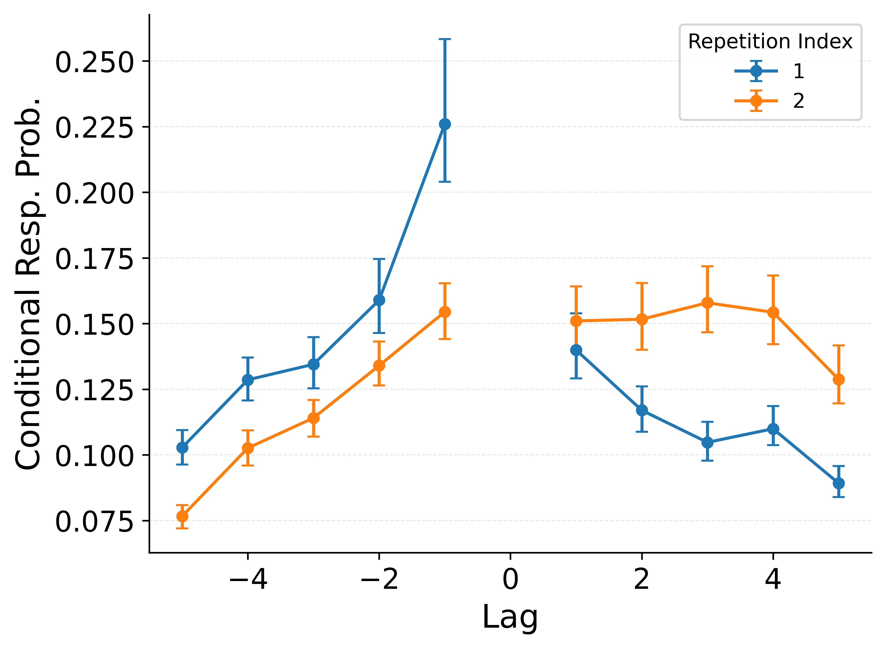
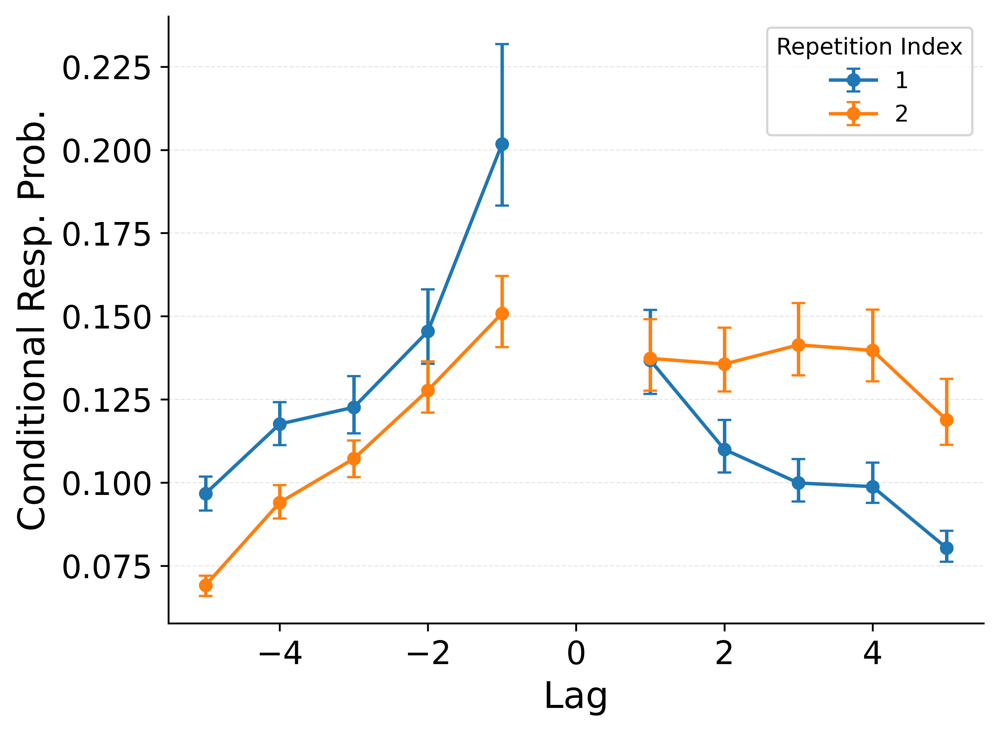
Finally, in serial recall, the same combination—distinct contexts at study plus occurrence-specific reinstatement at test, with reinforcement of the first occurrence—maintains strong continuations to \(i{+}1\) and keeps cross-occurrence forward errors at baseline levels. The 2×2 comparison in Figure 3.24 uses Logan (2021) (top: data; bottom: simulations) and shows that ICMR-Reinf mirrors the empirically negligible elevation of \(i\!\rightarrow\!j{+}1/j{+}2\) errors while preserving correct forward chaining.

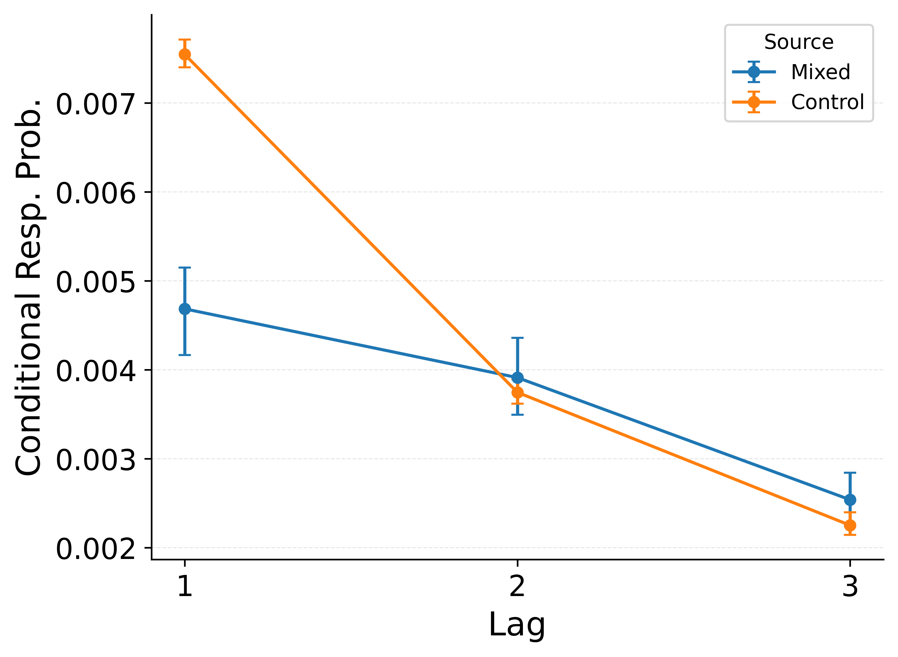
ICMR-Reinf keeps occurrences separate at study and allows retrieval to select a single occurrence at test, while preferentially reinforcing the first occurrence’s trace. It preserves core benchmarks and the spacing function; it maintains the absence of cross-neighbor knitting; it resolves the outgoing lag-CRP blending and captures the boosted first-over-second separation in mixed lists; and it mirrors the non-interference pattern in serial recall. The price is a single reinforcement parameter. The payoff is a coherent account in which a rehabilitated, non-associative study-phase mechanism contributes to repetition effects without reintroducing associative interference.
3.7 Formal Comparison Across Datasets
We compared four variants under a common fitting and scoring pipeline (Methods): Standard CMR , ICMR-NoSPR , ICMR-OS, and ICMR-Reinf. ICMR-Reinf introduces one additional reinforcement parameter; all other pairwise comparisons are parameter-matched. Fit quality is reported as mean negative log-likelihood (−log L) across participants with bootstrapped 95% CIs over subjects. Where informative, we also report AIC model weights (AICw), which penalize parameter count.
Across datasets, three patterns emerge. First, ICMR-OS substantially improves fit relative to Standard CMR in all datasets, with especially large gains in the serial-recall tasks (Logan 2021; Kahana and Jacobs 2000). Second, adding study-phase reinforcement without contextual knitting (ICMR-Reinf) yields a further, reliable improvement in free recall (Lohnas and Kahana (2014); Broitman and Kahana (2024)) despite its extra parameter, but brings no advantage over OS in serial recall. Third, ICMR-NoSPR improves over Standard CMR in free recall but is not sufficient on its own—consistent with the results sections above.
As compact deltas relative to Standard CMR: Lohnas −log L improves by −6.21 (NoSPR), −7.18 (OS), −9.20 (Reinf); Broitman by −5.25, −8.56, −9.54; Logan (serial) by −41.47 (OS) and −40.58 (Reinf); Kahana & Jacobs (serial) by −92.37 (OS) and −91.04 (Reinf).
To separate parameter-count effects from fit, we report AICw in two steps. First, a pairwise comparison between ICMR-OS and Standard CMR (parameter-matched) across all datasets; second, a three-way comparison in free recall that includes ICMR-Reinf (adds one parameter).
As a complementary, model-agnostic summary, we report the fraction of participants whose individual fit favored one model over another (lower −log L). These “win rates” mirror the AIC results: ICMR-OS beats Standard CMR for most or all participants in every dataset (Lohnas 80%, Broitman 79%, Logan 100%, Kahana & Jacobs 100%). In free recall, ICMR-Reinf beats ICMR-OS for a majority of participants (Lohnas 63%, Broitman 64%), whereas in serial recall the two are roughly tied (Logan 46% for Reinf; Kahana & Jacobs 53% for OS).
Taken together with the diagnostic analyses, the model-comparison results support a simple division of labor. Occurrence-specific reinstatement at test (ICMR-OS) is necessary to eliminate the cross-occurrence interference predicted by Standard CMR and dominates in serial recall. Study-phase reinforcement without contextual knitting (ICMR-Reinf) adds a small but reliable advantage in free recall by capturing the boosted access to first-occurrence context, while preserving the non-interference profile. ICMR-NoSPR establishes that CMR’s original study-phase reinstatement is not required for overall spacing or benchmark fits, but by itself it does not resolve the interference signature. Across datasets, standard CMR is consistently least favored under penalized fit.
3.8 General Discussion
Human episodic search is strikingly organized by temporal contiguity: recalling one experience tends to cue retrieval of experiences that occurred nearby in time (Kahana 1996; Healey, Long, and Kahana 2019). This chapter asked how that organizing principle manifests when the same item has multiple study positions within a list (e.g., “canoe” at positions i and j). Do repetitions knit their occurrence‑specific neighborhoods together, or do they remain separable such that retrieval can route through one occurrence without contacting the other? I addressed this question in free and serial recall by comparing performance in lists with item repetitions to a position‑matched, symmetric baseline. This procedure removes list-composition artifacts and isolates the consequences of being a repetition rather than a novel token in those positions (Lohnas and Kahana 2014; Tulving and Hastie 1972; Ratcliff, Clark, and Shiffrin 1990).
Retrieved‑context models explain contiguity and related regularities by coupling items to a slowly drifting temporal context and using that context as both a storage address and a retrieval cue (Howard and Kahana 2002a; Polyn, Norman, and Kahana 2009; Healey, Long, and Kahana 2019). During study, presenting an item reinstates contextual features associated with it into the ongoing context state, and the item binds to that updated state. Because the context drifts, different occurrences of the same item couple to different temporal states. During retrieval, the current context preferentially cues items encoded in similar contexts. Recalling an item then reinstates its associated contextual features into the cue again, which pulls subsequent transitions toward items studied nearby in time.
Under this framework, context evolution is item-driven. Presenting or recalling an item retrieves its associated context features and pulls the ongoing temporal context toward those item-specific features. This commitment explains how memory search can be guided by successive retrieval events, and also provides a cohesive account of how item repetition impacts memory retrieval dynamics (Howard and Kahana 2002a; Lohnas and Kahana 2014). First, each occurrence of the same item binds its to different temporal contexts; with increased spacing, these contexts become more distinct, producing a spacing advantage through encoding variability (Glenberg 1979; Cepeda et al. 2006). Second, each occurrence triggers a form of study-phase retrieval: it partially reinstates prior occurrences’ contexts into the ongoing state, making the contexts across occurrences more similar to each other (@ Hintzman, Summers, and Block 1975; Delaney, Verkoeijen, and Spirgel 2010). Finally, at test, recalling a repeated item reinstates a composite over its occurrence-specific contexts, priming recall transitions toward neighbors of all occurrences (Polyn, Norman, and Kahana 2009; Logan 2021; Sederberg, Howard, and Kahana 2008).
Here, I showed that this framework predicts patterns of cross-occurrence associative interference in free and serial recall. Item-driven context reinstatement knits occurrence-specific neighborhoods together at encoding and test, producing three signatures of blended support across occurrences. Together these imply that cues to one occurrence should also cue the other, predicting that (i) recalling a neighbor of one occurrence should cue neighbors of the other occurrence (cross-occurrence neighbor transitions), (ii) recalling the repeated item itself should produce balanced access to both occurrences’ neighborhoods, and (iii) in serial recall, correct chaining through one occurrence should increase erroneous continuations to the other occurrence’s forward neighbors. But across multiple datasets, my results contradict those predictions once the matched, symmetric baseline is applied.
First, I found that cross-occurrence neighbor transitions sit at baseline, indicating no knitting. Prior work (Lohnas and Kahana 2014) reported boosted cross-occurrence neighbor transitions in free recall, finding that for repeated items with study positions \(i\) and \(j\), participants exhibited boosted chances of transitioning from neighbors of \(i\) (e.g., \(i{+}1,i{+}2\)) to neighbors of \(j\) (e.g., \(j{+}1,j{+}2\)) and vice versa compared to a control. I generalized this analysis by reformulating it as a lag-CRP centered on the other occurrence’s neighbors and applying a matched, symmetric baseline to control for list-composition effects. Despite a similar reported methodology, my results observed no boost once the baseline was applied, suggesting a potential confound in the original analysis. Instead, what repetition effects I did observe were not predicted by retrieved-context theory: a boosted chance of transitioning from neighbors of the first occurrence to the repeated item itself (lag = 0) when it had not yet been recalled. Using a version of CMR that integrates unique features into ongoing context whether study events are new or repeated presentations keeps cross-occurrence neighbor transitions at baseline but does not reproduce the lag = 0 boost. A further variant that preferentially strengthens the first occurrence’s trace upon item repetition captures this effect, suggesting a non-associative mechanism that enhances access to the first occurrence without knitting contexts together. These results challenge an associative study-phase retrieval account of repetition’s consequences for memory search at study.
Second, I found that recalling the repeated item itself produced a reliable preference for the first occurrence’s neighbors over the second’s, contradicting the balanced-access prediction. Furthermore, when considering incoming transitions to repeated items, arrivals from the first occurrence’s backward neighbor were more likely than from the second’s, again contradicting balanced access. These patterns have been initially explored in other contemporaneous work. Broitman and Kahana (2024) focused on transitions from repeated items in free recall, finding that they exhibit similar biases toward the first occurrence’s context and even observing in spectral EEG analyses that neural activity patterns prior to these recall events were most similar to patterns observed during the first occurrence’s study event. Similarly, Lohnas (2025) examined incoming transitions to repeated items, finding that arrivals from the first occurrence’s backward neighbor were more likely than from the second’s.
My results replicate and extend these findings, showing that they persist across multiple datasets and are not artifacts of list composition and clarifying them against a position-matched, symmetric baseline. I found that these patterns are not fully accounted for by standard CMR when considered in combination with outcomes of analyses on a position-matched, symmetric baseline. Whereas CMR predicts more balanced transitions from the repeated item to each occurrence’s neighbors compared to position-matched controls, my results show a reliable preference for the first occurrence’s neighbors that exceeds baseline expectation. Using a version of CMR that both keeps occurrence contexts separate at study and allows retrieval to select a single occurrence’s context at test is able eliminate CMR’s prediction of balanced access. However, the variant still does not capture the boosted first-over-second separation in mixed lists relative to baseline. My variant that preferentially strengthens the first occurrence’s trace upon item repetition is able to additionally capture this preference, suggesting that a non-associative mechanism enhances access to the first occurrence without knitting contexts together. These results echo the interpretation of similar patterns observed by Lohnas (2025), who argued that the first occurrence may be privileged because retrieval of item information from its first presentation upon its second presentation may strengthens its trace. However, by contrast to Lohnas (2025), I find that retrieved-context theory requires modification in order to instantiate this mechanism without reintroducing associative interference.
Finally, I considered transitions from recall of repeated items in the context of serial recall. In serial recall of sequences with item repetitions, if recall proceeds accurately up through a repeated item’s first presentation, I asked how often participants erroneously transition to the +1 neighbor of the item’s second presentation. Because CMR predicts that recalling the repeated item reinstates a composite over both occurrences’ contexts, it predicts that correct chaining through the first occurrence should increase erroneous continuations to the second occurrence’s forward neighbors. In contrast, I found that such cross-occurrence forward errors were not elevated above a position-matched, symmetric baseline in two independent serial-recall datasets. This type of error receives extensive attention in the serial-recall literature and has been central to critiques of chaining models of serial order memory positing that each item cues the next (Henson 1996; Kahana and Jacobs 2000). These results extend the same critique to retrieved-context models using an item-based context reinstatement rule. Because they knit occurrence-specific contexts together at study and test, they predict that correct chaining through one occurrence should increase erroneous continuations to the other occurrence’s forward neighbors.
These findings provide a measured challenge to the standard retrieved-context account of memory search. Retrieved-context theory posits that context evolves by retrieving prior contextual states as opposed to contemporaneous accounts that instead proposed that context drifts randomly (Howard and Kahana 2002a). Here, items are the drivers of context evolution, evoking features from their prior presentations to update the ongoing context state and guide retrieval. This framework was embraced as a more parsimonious way to account for recency and contiguity effects in memory using a single mechanism. But these data show that this mechanism, however parsimonious, predicts associative interference that is not observed empirically. They raise the question: what then becomes of retrieved-context theory?
Our modeling results identify narrow changes to a retrieved-context model that reconcile it with these findings. Removing associative study-phase retrieval (CMR‑NoSPR) abolishes cross‑occurrence neighbor linkage yet preserves serial‑position, CRP, and spacing benchmarks, showing that classic free‑recall successes do not depend on item-driven context evolution as originally implemented. Allowing occurrence‑specific reinstatement at test (ICMR‑OS) then eliminates balanced access from the repeater and preserves forward chaining in serial recall. It sidesteps the associative‑interference prediction while keeping the temporal‑context machinery intact. These changes are effectively a variant of CMR that replaces item-based context and retrieval dynamics with an occurrence-specific alternative that can be variously interpreted as using a position-, event-, instance- or timeline-based code. Here, item identities are only relevant when reporting the recalled item; they do not associate study events during encoding or memory search. The resulting variant is still a retrieved-context model because it still posits that context evolves by retrieving prior contextual states, but treats each study episode as a unique event that can be separately cued and retrieved at test.
The serial‑recall literature has long emphasized positional or timeline codes and competitive selection to explain transposition gradients and the sparing of strict chaining, particularly in lists with within‑list repetitions (Henson 1996; Brown, Preece, and Hulme 2000). My serial‑recall analyses align with this perspective: after correct report through the first occurrence, continuations to i + 1 were preserved and erroneous continuations to the competing neighbor j + 1 were not elevated relative to position‑matched controls – exactly the pattern positional accounts anticipate and that strict item‑to‑item chaining (or blended item‑based reinstatement) would struggle to accommodate. In other words, the absence of cross‑occurrence forward errors in my data is not merely compatible with positional coding; it is diagnostic of the kind of competition over position‑like cues those models posit. Traditionally, accounts of free recall have de-emphasized the role of positional information, with performance thought to rely predominantly on temporal coding and semantic organization (Polyn, Norman, and Kahana 2009; Lohnas, Polyn, and Kahana 2015; Sederberg, Howard, and Kahana 2008). However, recent efforts to show that retrieved-context models can address serial as well as free recall (Lohnas 2024; Logan 2021) have highlighted the viability of an integrated framework that encompasses both types of recall. These results help advance an integrated view of serial and free recall where a common set of constraints from both literatures inform theory development. The resulting model retains the core principles of retrieved-context theory while incorporating insights from positional coding approaches: it allows for the use of position-like information to guide retrieval while maintaining the evolving context representation as the primary search scaffold.
It is nonetheless challenging to reconcile these findings with prior demonstrations that item features can influence organization in free and serial recall. Free recall is classically subject to semantic organization, a tendency for similar items to cluster during retrieval (Bousfield 1953; Glanzer 1969; Howard and Kahana 2002b; Romney, Brewer, and Batchelder 1993). Similarly, serial-recall performance is influenced by item-level properties such as phonological similarity (Baddeley 1966; Osth and Hurlstone 2023). This consistency of these classic benchmarks establishes all but incontrovertibly that item features fundamentally influence the organization of memory search, instead of just defining what is reported when a trace is retrieved. Furthermore, patterns of prior-list intrusions (PLIs) across free and serial recall suggest that items can cue retrieval across list boundaries, which is difficult to reconcile with a purely temporal or positional code. For example, transitions from items in the prior list to their neighbors in the current list are elevated relative to a matched baseline, suggesting that item features can cue retrieval across list boundaries (Lohnas, Polyn, and Kahana 2015). At the same time though, positional codes have been shown to influence PLIs in serial recall, with intrusions tending to come from the same serial position in the prior list as the current recall position (e.g., Osth and Hurlstone 2023). Together, a wealth of evidence persistently shows that item features influence organization in both free and serial recall.
Logan (2021) demonstrated item-dependent and position-dependent contexts can be accommodated simultaneously in a retrieved-context model to simultaneously address these and other constraints. Similarly, CMR and its variants has traditionally included multiple layers of context that encode different kinds of similarity relationships across study events, such as a semantic layer that captures item similarity or a source layer that captures stimulus modality (Polyn, Norman, and Kahana 2009). Given these successes, it is likely that ICMR-OS could similarly be extended to include item-level features alongside the occurrence-specific features it applies to avoid associative interference. An additional parameter that weights the contribution of an item-dependent contextual layer relative to a occurrence-specific contextual layer could allow the model to flexibly capture the influence of item features on organization while avoiding associative interference across occurrences.
That said, the lack of any cross‑occurrence interference in our free‑ and serial‑recall datasets weighs against even a “small” but pervasive role for item‑based knitting in the organization of search under standard list‑learning conditions. These results instead tentatively endorse a model that completely excludes item-level features from driving context evolution during encoding or retrieval. Two caveats temper these conclusions. First, I did not systematically analyze individual differences in cross‑occurrence interference; if a minority of participants show blending, population‑level averages could mask it. Second, I did not report evaluation of mixture models that combine explicit position/timeline codes with limited item‑based inputs under a single architecture. Either extension could clarify when item‑based features influence organization – e.g., under deliberate integration instructions, at very short lags with rehearsal, or when semantic scaffolds promote cross‑episode binding. A program of research that evaluates proposed models across a broader range of conditions and datasets and addresses phenomena like PLIs and semantic clustering could similarly clarify when item-level features influence organization. These limitations set the stage for future work.
Along with its consequences for retrieved-context accounts of memory search, these results also challenge classic understanding of factors underlying the spacing effect. The spacing effect is classically understood as a repetition effect, and has been a central focus of research on memory for repeated experience (Cepeda et al. 2006) However, it applies even to pairs of distinct items, not just repeated items. By measuring the probability of retrieving either of two study items during a free recall trial – an analysis termed the “OR score” – research consistently finds that pairs of spaced items were more likely to be recalled than pairs of massed items (Lohnas, Polyn, and Kahana 2011). Notably, in a phenomenon called “superadditivity”, the mnenomic benefit of spacing tends to be more pronounced for repeated items than for distinct items . The probability of recalling an item repeated in a spaced fashion is frequently reported as higher than the probability of recalling one of two distinct but similarly spaced items, violating statistical independence (Benjamin and Tullis 2010). This has been interpreted as evidence that additional mechanisms are at play when items are repeated, beyond those that govern the spacing effect for distinct items. My results did not directly test for a superadditive spacing effect, but nonetheless provide insight into its possible mechanisms.
The study-phase retrieval hypothesis is one among several prominent accounts of where such a superadditive spacing advantage might come from. By this account, presenting an item again after a lag reinstates the context associated with its prior presentation, in some way strengthening access to the item’s representation in memory (Hintzman, Summers, and Block 1975; Delaney, Verkoeijen, and Spirgel 2010). Retrieved-context theory combines a specific instantiation of this idea with a contextual variability mechanism to explain the spacing effect for repeated items (Howard and Kahana 2002a; Lohnas and Kahana 2014). In retrieved-context models, study-phase retrieval during repetition reinstates makes the contexts across occurrence neighborhoods more similar to each other, producing the patterns of associative interference described above. This mechanism has been proposed to help address spacing effects in free recall (Lohnas and Kahana 2014) as well as a potential basis for the benefits of retrieval practice (Karpicke and Blunt 2011; Whiffen and Karpicke 2017). But while confirming and evaluating CMR’s predictions of associative interference because of this mechanism, I also showed that study-phase retrieval in CMR does not contribute to the spacing effect itself: removing the mechanism (in CMR-SPR) preserves the spacing advantage for repeated items and keeps contexts reinstated upon each occurrence distinct. In CMR, the primary consequence of study-phase retrieval is to knit occurrence-specific contexts together; characterizations of the mechanism as providing a repetition-specific strengthening of retrieved representations are not clearly supported by the current findings (Lohnas 2025; Lohnas and Kahana 2014).
To match this characterization, I proposed a modified version of ICMR-OS (ICMR-Reinf) that explicitly incorporates study-phase retrieval as a mechanism for strengthening representations during repetition. When an item is repeated, it preferentially strengthens the trace of the first occurrence without knitting contexts together, using an additional parameter to control the degree of strengthening. This mechanism accounts for three patterns identified in my analyses. First, it captures the boosted access to the first occurrence’s neighbors upon recalling the repeated item itself in free recall. Second, it captures the boosted probability of transition to repeated items from the -1 neighbor of the first occurrence relative to the second. Third, it captures the boosted tendency after retrieving the +1 neighbor of an item’s first occurrence to transition to the repeated item itself when it has not yet been recalled. All these patterns can be accounted for in terms of strengthened context-to-item associations for the first occurrence of any repeatedly studied items without cross-occurrence knitting. Still, model fits are not substantially improved over ICMR-OS by this variant, suggesting that further development is needed to interpret these patterns and their mechanistic basis. Instead, ICMR-Reinf represents an example of how study-phase retrieval might be rehabilitated within retrieved-context models to capture repetition-specific effects without reintroducing associative interference.
This thesis opened by asking how memory links related episodes without collapsing their distinctive details. In an example scenario, I described two visits to a bakery: one where you inhale warm cinnamon and buy a fresh loaf, and another where you are greeted by the aroma of espresso and a new cashier. How is it that a friend speaking of “the bakery down the street” can remind you of both visits, yet you still know which purchase happened when? The standard retrieved-context account of memory search posits that this is a task fraught with interference, because such a cue can retrieve a blend of contextual details across both visits. In contrast, my results suggest that memory search in tasks like free and serial recall succeeds by sidestepping this challenge. Instead of using item features to remember associated contextual details, memory search may rely on a positional or event-based contextual code that can separately index each occurrence of an item during encoding and later retrieve individual occurrences stored as distinct traces at test. A later mention of “the bakery down the street” can cue either visit, but it need not blend them. Memory search can route through one episode at a time, preserving what happened when, allowing repeated experience to strengthen access without sacrificing specificity.